EDA for Natural Language Processing#
06/15/21
Phase 4 Project Office Hours
TABLE OF CONTENTS#
Click to jump to matching Markdown Header.
Introduction
OBTAIN
SCRUB
EXPLORE
MODEL
iNTERPRET
Conclusions/Recommendations
INTRODUCTION#
The Covid-19 pandemic has been an extreme moment in human history, in which the basic aspects of every day have been turned into complicated and risky endeavors. - Understandably, the pandemic has generated a lot of strong feelings in individuals. - These feelings can take on various forms: from frustration and anger to sadness and despair. - Additionally, for many millen ials and Gen-Xers, the pandemic has actually been a postiive force in reducing social pressures.
For this analysis, we wanted to explore the nature of various sentiments related to Covid-19. Using covid-realated tweets from Kaggle, we will create a predictive model to predict the sentiment from the text. We will use these supervised learning models and additonal EDA to better understand the underlying reasons/motivations/issues for the various sentiments expressed.
Dataset from Kaggle:
We will be using the
train.csvdataset, which has been renamed tocornavirus_tweets.csv.gz
OBTAIN#
import matplotlib.pyplot as plt
import matplotlib as mpl
import seaborn as sns
import numpy as np
import pandas as pd
from sklearn.model_selection import train_test_split,GridSearchCV
from sklearn.feature_extraction.text import (CountVectorizer,TfidfTransformer,
TfidfVectorizer,ENGLISH_STOP_WORDS)
from sklearn.pipeline import Pipeline
from sklearn.compose import ColumnTransformer
import nltk
from nltk import TweetTokenizer, word_tokenize,wordpunct_tokenize
import string
from wordcloud import WordCloud
from sklearn.linear_model import LogisticRegression,LogisticRegressionCV
from sklearn.ensemble import RandomForestClassifier
from sklearn.svm import SVC
# !pip install -U ipywidgets
# !pip install -U ipykernel
# import warnings
# warnings.filterwarnings('always')#filterwarnings('ignore')
df = pd.read_csv("https://github.com/flatiron-school/Online-DS-FT-022221-Cohort-Notes/raw/master/Phase_4/topic_42_tuning_neural_networks/data/cornavirus_tweets.csv.gz",
encoding='latin-1',parse_dates=['TweetAt'])
df
| UserName | ScreenName | Location | TweetAt | OriginalTweet | Sentiment | |
|---|---|---|---|---|---|---|
| 0 | 3799 | 48751 | London | 2020-03-16 | @MeNyrbie @Phil_Gahan @Chrisitv https://t.co/i... | Neutral |
| 1 | 3800 | 48752 | UK | 2020-03-16 | advice Talk to your neighbours family to excha... | Positive |
| 2 | 3801 | 48753 | Vagabonds | 2020-03-16 | Coronavirus Australia: Woolworths to give elde... | Positive |
| 3 | 3802 | 48754 | NaN | 2020-03-16 | My food stock is not the only one which is emp... | Positive |
| 4 | 3803 | 48755 | NaN | 2020-03-16 | Me, ready to go at supermarket during the #COV... | Extremely Negative |
| ... | ... | ... | ... | ... | ... | ... |
| 41154 | 44951 | 89903 | Wellington City, New Zealand | 2020-04-14 | Airline pilots offering to stock supermarket s... | Neutral |
| 41155 | 44952 | 89904 | NaN | 2020-04-14 | Response to complaint not provided citing COVI... | Extremely Negative |
| 41156 | 44953 | 89905 | NaN | 2020-04-14 | You know itÃÂs getting tough when @KameronWi... | Positive |
| 41157 | 44954 | 89906 | NaN | 2020-04-14 | Is it wrong that the smell of hand sanitizer i... | Neutral |
| 41158 | 44955 | 89907 | i love you so much || he/him | 2020-04-14 | @TartiiCat Well new/used Rift S are going for ... | Negative |
41159 rows × 6 columns
## SAMPLING FOR SG
df = df.sample(n=10000)
df.info()
<class 'pandas.core.frame.DataFrame'>
Int64Index: 10000 entries, 19031 to 1215
Data columns (total 6 columns):
# Column Non-Null Count Dtype
--- ------ -------------- -----
0 UserName 9999 non-null object
1 ScreenName 10000 non-null object
2 Location 7931 non-null object
3 TweetAt 9999 non-null datetime64[ns]
4 OriginalTweet 9999 non-null object
5 Sentiment 9999 non-null object
dtypes: datetime64[ns](1), object(5)
memory usage: 546.9+ KB
Data#
Columns of interest are:
For NLP classification:
Sentiment
OriginalTweet,
For EDA:
Sentiment
Location
TweetAt
SCRUB#
## Check for nulls
def null_check(df):
"""Returns a dataframe of null value counts andd %'s'"""
nulls = df.isna().sum()
return pd.DataFrame({'nulls':nulls,
'%null':nulls/len(df)*100}).round(2)
null_check(df)
| nulls | %null | |
|---|---|---|
| UserName | 1 | 0.01 |
| ScreenName | 0 | 0.00 |
| Location | 2069 | 20.69 |
| TweetAt | 1 | 0.01 |
| OriginalTweet | 1 | 0.01 |
| Sentiment | 1 | 0.01 |
Drop nulls from subset=[‘OriginalTweet’,’Sentiment’]
Fill Nulls:
Location: “Unknown”
## deal with nulls and check
df['Location'].fillna('Unknown',inplace=True)
df.dropna(subset=['TweetAt','OriginalTweet','Sentiment'],inplace=True)
null_check(df)
| nulls | %null | |
|---|---|---|
| UserName | 0 | 0.0 |
| ScreenName | 0 | 0.0 |
| Location | 0 | 0.0 |
| TweetAt | 0 | 0.0 |
| OriginalTweet | 0 | 0.0 |
| Sentiment | 0 | 0.0 |
EXPLORE#
Resources#
## How many unique users?
df['UserName'].nunique()
9999
## Are any users represented more than once?
user_counts = df["UserName"].value_counts()
user_counts[user_counts >1]
Series([], Name: UserName, dtype: int64)
Exploring Sentiment#
df['Sentiment'].unique()
array(['Negative', 'Extremely Negative', 'Neutral', 'Extremely Positive',
'Positive'], dtype=object)
## Make list of sentiments for ordering plots
sentiment_order = ['Extremely Negative', 'Negative','Neutral',
'Positive','Extremely Positive']
## Overall sentiment distribution
sns.catplot(data=df,x='Sentiment',kind='count',order=sentiment_order,aspect=2)
<seaborn.axisgrid.FacetGrid at 0x7fe7da96d820>
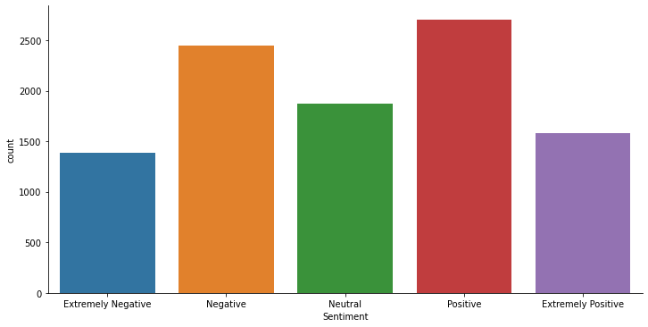
df['Sentiment'].value_counts(1)
Positive 0.270627
Negative 0.245025
Neutral 0.187519
Extremely Positive 0.158516
Extremely Negative 0.138314
Name: Sentiment, dtype: float64
The dataset has 5 sentiment ratings ranging from Extremely Negative to Extremely Positive. - The classes are approximately balanced, but The Extreme sentiments and Neutral sentiments have fewer obserations
Making a SimpleSentiment column as a 3-class column#
simple_sentiment_mapper = {'Extremely Negative':"Negative",
'Negative':'Negative',
'Neutral':'Neutral',
'Positive':'Positive',
'Extremely Positive':'Positive'}
df['SimpleSentiment'] = df["Sentiment"].replace(simple_sentiment_mapper)
df["SimpleSentiment"].value_counts(1,dropna=False)
Positive 0.429143
Negative 0.383338
Neutral 0.187519
Name: SimpleSentiment, dtype: float64
## Overall sentiment distribution
sns.catplot(data=df,x='SimpleSentiment',kind='count',
order=['Negative','Neutral','Positive'],aspect=2)
<seaborn.axisgrid.FacetGrid at 0x7fe7db9a4b20>
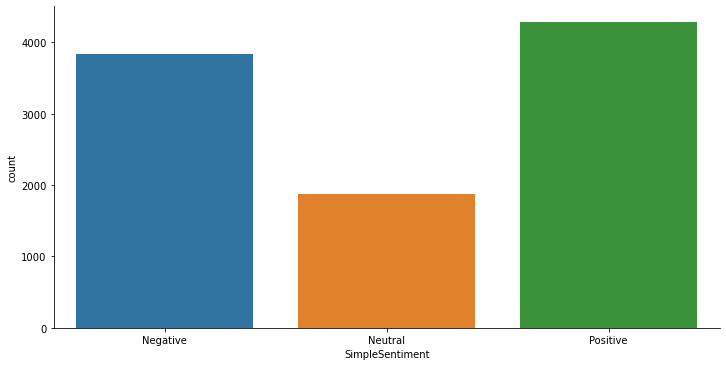
The simpler 3 class version of Sentiment creates a class imbalance issue with neutral tweets having the fewest observations.
Exploring Location#
## How many locations?
location_counts = df['Location'].value_counts()
location_counts.head(40)
Unknown 2069
United States 134
London, England 130
London 122
Washington, DC 111
United Kingdom 82
New York, NY 79
UK 71
India 68
Los Angeles, CA 67
Australia 50
USA 47
England, United Kingdom 46
Chicago, IL 44
Global 43
San Francisco, CA 38
Toronto, Ontario 36
Atlanta, GA 34
Boston, MA 34
California, USA 33
Mumbai, India 33
Canada 32
New York, USA 32
New Delhi, India 29
Lagos, Nigeria 28
New York 27
Texas, USA 26
Houston, TX 25
Los Angeles 24
Nigeria 23
Sydney, New South Wales 23
Austin, TX 23
England 22
Nairobi, Kenya 22
Toronto 21
New York City 21
Seattle, WA 20
Denver, CO 20
Dallas, TX 20
Worldwide 19
Name: Location, dtype: int64
Will analyze locations with more than 100 tweets.
## Visualize locations with >100 tweets
frequent_locations = location_counts[(location_counts>100)&(location_counts<6000)]
ax = frequent_locations.sort_values().plot(kind='barh',figsize=(8,5))
ax.set(xlabel='Counts',ylabel='Location',title='Locations with >100 Tweets');
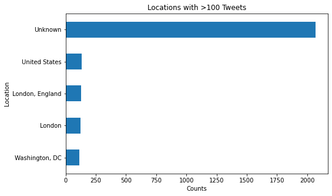
## Saving just most frequent locations
df_freq_location = df[df['Location'].isin(frequent_locations.index)]
df_freq_location
| UserName | ScreenName | Location | TweetAt | OriginalTweet | Sentiment | SimpleSentiment | |
|---|---|---|---|---|---|---|---|
| 9861 | 13660 | 58612 | London | 2020-03-20 | It's a simple thing.\r\r\nBuy what you need.\r... | Neutral | Neutral |
| 16775 | 20574 | 65526 | Unknown | 2020-03-22 | #JantaCurfew #Covid_19india\r\r\nEven though o... | Positive | Positive |
| 39779 | 43576 | 88528 | Unknown | 2020-04-13 | PARTS PRICE ONLY During the COVID 19 Lockd... | Positive | Positive |
| 6080 | 9879 | 54831 | Unknown | 2020-03-19 | I didnÃÂt know NYS had the highest amount of... | Extremely Positive | Positive |
| 34277 | 38075 | 83027 | Unknown | 2020-08-04 | Know, what PPE Kit contains.\r\r\n.\r\r\n.\r\r... | Neutral | Neutral |
| ... | ... | ... | ... | ... | ... | ... | ... |
| 38318 | 42116 | 87068 | Unknown | 2020-11-04 | The outrage I just witnessed in a supermarket ... | Positive | Positive |
| 26184 | 29983 | 74935 | Unknown | 2020-02-04 | The Pakistan Bureau of Statistics PBS on Wedne... | Neutral | Neutral |
| 34716 | 38514 | 83466 | Unknown | 2020-08-04 | #worst #coronavirus Trapped pensioner forced t... | Extremely Negative | Negative |
| 28703 | 32502 | 77454 | Unknown | 2020-05-04 | #coronavirus looking at people who sold mask a... | Neutral | Neutral |
| 8649 | 12448 | 57400 | Unknown | 2020-03-20 | As panic buyers empty supermarket shelves acro... | Extremely Negative | Negative |
2566 rows × 7 columns
Sentiment Word Usage#
## save a dictionary with each sentiment's df saved under the sentiment type
sent_dict = {}
for sentiment in df["SimpleSentiment"].unique():
sent_dict[sentiment] = df[ df['Sentiment']==sentiment]
sent_dict.keys()
dict_keys(['Negative', 'Neutral', 'Positive'])
tokenizer = TweetTokenizer(preserve_case=False)
## save stopwords
stopwords_list = nltk.corpus.stopwords.words('english')
stopwords_list.extend(string.punctuation)
stopwords_list.extend(['http','https','co'])
covid_stopwords = [*stopwords_list, 'coronavirus','covid',
'covid19','covid_19','covid2019',"#coronavirus",
"#covid_19",'']
def prep_wordcloud_corpus(df,stopwords_list,text_col='OriginalTweet'):
## save neg_corpus and remove stopwords
corpus = tokenizer.tokenize(' '.join(df[text_col]))
corpus = [w.encode('ascii','ignore').decode() for w in corpus if w not in stopwords_list]
return corpus
corpus_dict = {sentiment:prep_wordcloud_corpus(sents,covid_stopwords) for sentiment,sents \
in sent_dict.items()}
# neg_corpus = prep_wordcloud_corpus(neg_sents)
# pos_corpus = prep_wordcloud_corpus(pos_sents)
# neut_corpus = prep_wordcloud_corpus(neu_sents)
corpus_dict['Negative'][:5]
['chandrababu', 'naidu', 'expressed', 'concern', 'almost']
## MOST FREQUENT NEGATIVE TWEET WORDS
neg_freq = nltk.FreqDist(corpus_dict['Negative'])
neg_freq_df = pd.DataFrame(neg_freq.most_common(25),columns=['Word','Frequency'])
neg_freq_df
| Word | Frequency | |
|---|---|---|
| 0 | 2250 | |
| 1 | 19 | 783 |
| 2 | prices | 589 |
| 3 | food | 459 |
| 4 | supermarket | 400 |
| 5 | store | 360 |
| 6 | people | 350 |
| 7 | grocery | 326 |
| 8 | consumer | 249 |
| 9 | #covid19 | 243 |
| 10 | demand | 211 |
| 11 | panic | 202 |
| 12 | ... | 175 |
| 13 | shopping | 158 |
| 14 | online | 156 |
| 15 | get | 149 |
| 16 | time | 146 |
| 17 | pandemic | 145 |
| 18 | oil | 140 |
| 19 | need | 137 |
| 20 | us | 135 |
| 21 | workers | 127 |
| 22 | going | 124 |
| 23 | home | 122 |
| 24 | due | 122 |
ax = neg_freq_df.set_index('Word').sort_values('Frequency').plot(kind='barh')
ax.set(title="25 Most Common Words in Negative Tweets")
[Text(0.5, 1.0, '25 Most Common Words in Negative Tweets')]
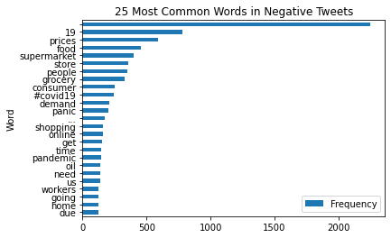
## MOST FREQUENT NEGATIVE TWEET WORDS
pos_freq = nltk.FreqDist(corpus_dict['Positive'])
pos_freq_df = pd.DataFrame(pos_freq.most_common(25),columns=['Word','Frequency'])
ax = pos_freq_df.set_index('Word').sort_values('Frequency').plot(kind='barh')
ax.set(title="25 Most Common Words in Positive Tweets")
[Text(0.5, 1.0, '25 Most Common Words in Positive Tweets')]
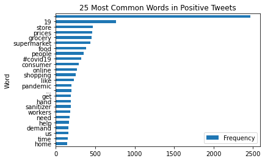
Comparing All 3 Sentiments Word Frequencies via WordClouds#
### Specify params for all 3 word clouds
cloud_stopwords = [*stopwords_list, 'coronavirus','covid',
'covid19','covid_19','covid2019']
cloud_kws = dict(collocations=True,normalize_plurals=False,
stopwords=cloud_stopwords,
width=1200,min_word_length=2,
height=800,min_font_size=10)
## Tweaking final params aand generating clouds
wordcloud_dict = {}
wordcloud_dict['Negative'] = WordCloud(**cloud_kws,
colormap='Reds'
).generate(' '.join(corpus_dict['Negative']))
wordcloud_dict['Neutral'] = WordCloud(**cloud_kws,
colormap='Greys'
).generate(' '.join(corpus_dict['Neutral']))
wordcloud_dict['Positive'] = WordCloud(**cloud_kws,
colormap='Greens'
).generate(' '.join(corpus_dict['Positive']))
## Plot all 3 classes
fig, ax = plt.subplots(nrows=len(wordcloud_dict.keys()), figsize=(16,20))
title_font = {'fontweight':'bold','fontsize':20}
# cmap_list = ['Reds','Greens','Greys']
i=0
for sentiment, cloud in wordcloud_dict.items():
ax[i].imshow(cloud)
ax[i].set_title(sentiment,fontdict=title_font)
ax[i].axis('off')
i+=1
plt.tight_layout()
## Plot pos and neg side by side
fig, ax = plt.subplots(ncols=2, figsize=(16,20))
title_font = {'fontweight':'bold','fontsize':20}
sentiment = 'Positive'
ax[0].imshow(wordcloud_dict[sentiment])
ax[0].set_title(sentiment,fontdict=title_font)
ax[0].axis('off')
sentiment = 'Negative'
ax[1].imshow(wordcloud_dict[sentiment])
ax[1].set_title(sentiment,fontdict=title_font)
ax[1].axis('off')
plt.tight_layout()
MODEL#
Make X,y + train_test_spit#
## Make a dict mapper for target
target_map = dict(zip(sentiment_order,range(len(sentiment_order)+1)))
target_map
{'Extremely Negative': 0,
'Negative': 1,
'Neutral': 2,
'Positive': 3,
'Extremely Positive': 4}
## mapper for Simpler 3-class target
target_map_3class = {'Extremely Negative':0,
'Negative':0,
'Neutral':1,
'Positive':2,
'Extremely Positive':2}
target_map_3class
{'Extremely Negative': 0,
'Negative': 0,
'Neutral': 1,
'Positive': 2,
'Extremely Positive': 2}
## making numeric target col
df['target']=df['Sentiment'].map(target_map)
df['target'].value_counts(dropna=False,normalize=True)
3 0.270627
1 0.245025
2 0.187519
4 0.158516
0 0.138314
Name: target, dtype: float64
df['target_3class']=df['Sentiment'].map(target_map_3class)
df['target_3class'].value_counts(dropna=False,normalize=True)
2 0.429143
0 0.383338
1 0.187519
Name: target_3class, dtype: float64
X = df['OriginalTweet'].copy()
y = df['target_3class'].copy()#.map(target_map)
y.value_counts(1)
2 0.429143
0 0.383338
1 0.187519
Name: target_3class, dtype: float64
X_train, X_test, y_train, y_test = train_test_split(X,y,test_size=0.4,
random_state=321)
from sklearn import set_config
set_config(display='diagram')
## From tjhe lessons
from nltk import regexp_tokenize
pattern = r"([a-zA-Z]+(?:'[a-z]+)?)"
regexp_tokenize("I can't wait for summer. Ain't it grand",pattern)
['I', "can't", 'wait', 'for', 'summer', "Ain't", 'it', 'grand']
tokenizer = TweetTokenizer(preserve_case=False,strip_handles=False)
tokenizer.tokenize("I can't wait for summer. Ain't it grand")
['i', "can't", 'wait', 'for', 'summer', '.', "ain't", 'it', 'grand']
# abbrev_dict= {' OT ':'overtime',
# 'HR':'human resources'}
df['TweetsNoApos'] = df['OriginalTweet'].map(lambda x: x.replace("'",''))
df
| UserName | ScreenName | Location | TweetAt | OriginalTweet | Sentiment | SimpleSentiment | target | target_3class | TweetsNoApos | |
|---|---|---|---|---|---|---|---|---|---|---|
| 19031 | 22830 | 67782 | Anantnag J&K India | 2020-03-24 | Chandrababu Naidu expressed concern over almos... | Negative | Negative | 1 | 0 | Chandrababu Naidu expressed concern over almos... |
| 5023 | 8822 | 53774 | Morehead, KY | 2020-03-18 | Gov. Andy Beshear and Attorney General Daniel ... | Extremely Negative | Negative | 0 | 0 | Gov. Andy Beshear and Attorney General Daniel ... |
| 9861 | 13660 | 58612 | London | 2020-03-20 | It's a simple thing.\r\r\nBuy what you need.\r... | Neutral | Neutral | 2 | 1 | Its a simple thing.\r\r\nBuy what you need.\r\... |
| 26704 | 30503 | 75455 | Richmond, London | 2020-02-04 | Surging oil prices lifted #UKÃÂs commodity-h... | Extremely Negative | Negative | 0 | 0 | Surging oil prices lifted #UKÃÂs commodity-h... |
| 38921 | 42719 | 87671 | Valley Of The Kings | 2020-12-04 | One of the many pluses of social distancing? O... | Extremely Positive | Positive | 4 | 2 | One of the many pluses of social distancing? O... |
| ... | ... | ... | ... | ... | ... | ... | ... | ... | ... | ... |
| 14723 | 18522 | 63474 | chatham-kent, ontario | 2020-03-22 | If any retailer thinks that selling a 6 pack o... | Positive | Positive | 3 | 2 | If any retailer thinks that selling a 6 pack o... |
| 27422 | 31221 | 76173 | UK | 2020-03-04 | The Consummation of the Consumer Society "[#Co... | Extremely Negative | Negative | 0 | 0 | The Consummation of the Consumer Society "[#Co... |
| 8649 | 12448 | 57400 | Unknown | 2020-03-20 | As panic buyers empty supermarket shelves acro... | Extremely Negative | Negative | 0 | 0 | As panic buyers empty supermarket shelves acro... |
| 5560 | 9359 | 54311 | Los Angeles, CA | 2020-03-19 | When the outbreak is over we ought to salute o... | Positive | Positive | 3 | 2 | When the outbreak is over we ought to salute o... |
| 1215 | 5014 | 49966 | Dunedin, New Zealand | 2020-03-17 | Confirmed case of Covid-19 in Dunedin. I know... | Positive | Positive | 3 | 2 | Confirmed case of Covid-19 in Dunedin. I know... |
9999 rows × 10 columns
df[df['OriginalTweet'].str.contains("'")]
| UserName | ScreenName | Location | TweetAt | OriginalTweet | Sentiment | SimpleSentiment | target | target_3class | TweetsNoApos | |
|---|---|---|---|---|---|---|---|---|---|---|
| 9861 | 13660 | 58612 | London | 2020-03-20 | It's a simple thing.\r\r\nBuy what you need.\r... | Neutral | Neutral | 2 | 1 | Its a simple thing.\r\r\nBuy what you need.\r\... |
| 38921 | 42719 | 87671 | Valley Of The Kings | 2020-12-04 | One of the many pluses of social distancing? O... | Extremely Positive | Positive | 4 | 2 | One of the many pluses of social distancing? O... |
| 16775 | 20574 | 65526 | Unknown | 2020-03-22 | #JantaCurfew #Covid_19india\r\r\nEven though o... | Positive | Positive | 3 | 2 | #JantaCurfew #Covid_19india\r\r\nEven though o... |
| 127 | 3926 | 48878 | ????? ???? ???????? | 2020-03-16 | #unpopularopinion You'll be able to tell how m... | Negative | Negative | 1 | 0 | #unpopularopinion Youll be able to tell how mu... |
| 3978 | 7777 | 52729 | Milford, OH | 2020-03-18 | 2nd time in a week i couldn't get bread or mea... | Extremely Negative | Negative | 0 | 0 | 2nd time in a week i couldnt get bread or meat... |
| ... | ... | ... | ... | ... | ... | ... | ... | ... | ... | ... |
| 38939 | 42737 | 87689 | Kuala Lumpur City | 2020-12-04 | Just recently, I've finalised an article about... | Extremely Positive | Positive | 4 | 2 | Just recently, Ive finalised an article about ... |
| 34718 | 38516 | 83468 | Global | 2020-08-04 | Amidst #COVID19 consumer #buyingbehaviors are ... | Positive | Positive | 3 | 2 | Amidst #COVID19 consumer #buyingbehaviors are ... |
| 13130 | 16929 | 61881 | Germany | 2020-03-21 | The founder of the world's largest hedge fund ... | Extremely Positive | Positive | 4 | 2 | The founder of the worlds largest hedge fund B... |
| 9616 | 13415 | 58367 | Campbellsville, KY | 2020-03-20 | Fuck testing the @NBA and Celebrities... Keep ... | Negative | Negative | 1 | 0 | Fuck testing the @NBA and Celebrities... Keep ... |
| 1215 | 5014 | 49966 | Dunedin, New Zealand | 2020-03-17 | Confirmed case of Covid-19 in Dunedin. I know... | Positive | Positive | 3 | 2 | Confirmed case of Covid-19 in Dunedin. I know... |
1571 rows × 10 columns
# "can't" in stopwords_lista
'!' in stopwords_list
stopwords_list.remove('!')
'!' in stopwords_list
False
## set up text preprocessing pipeline
tokenizer = TweetTokenizer(preserve_case=False,strip_handles=False)
text_pipe = Pipeline([
('vectorizer',CountVectorizer(strip_accents='unicode',
tokenizer=tokenizer.tokenize,
# token_pattern= r"([a-zA-Z]+(?:'[a-z]+)?)",
stop_words=stopwords_list)),
('tfidf',TfidfTransformer())
])
text_pipe
Pipeline(steps=[('vectorizer',
CountVectorizer(stop_words=['i', 'me', 'my', 'myself', 'we',
'our', 'ours', 'ourselves', 'you',
"you're", "you've", "you'll",
"you'd", 'your', 'yours',
'yourself', 'yourselves', 'he',
'him', 'his', 'himself', 'she',
"she's", 'her', 'hers', 'herself',
'it', "it's", 'its', 'itself', ...],
strip_accents='unicode',
tokenizer=>)),
('tfidf', TfidfTransformer())]) CountVectorizer(stop_words=['i', 'me', 'my', 'myself', 'we', 'our', 'ours',
'ourselves', 'you', "you're", "you've", "you'll",
"you'd", 'your', 'yours', 'yourself', 'yourselves',
'he', 'him', 'his', 'himself', 'she', "she's",
'her', 'hers', 'herself', 'it', "it's", 'its',
'itself', ...],
strip_accents='unicode',
tokenizer=>) TfidfTransformer()
X_train_vec = text_pipe.fit_transform(X_train)
X_test_vec = text_pipe.transform(X_test)
Checking what words were used by our vectorizers by checking the feature names
resulting_words = text_pipe['vectorizer'].get_feature_names()
resulting_words[:10]
['!',
'##cbd',
'##coronavirus',
'##departmentofhealth',
'#13',
'#18movies',
'#1basketpershopper',
'#2019ncov',
'#2020',
'#21daylockdown']
"can't" in resulting_words
True
TSNE#
from sklearn.manifold import TSNE
import plotly.express as px
from mpl_toolkits.mplot3d import Axes3D
## TSNE For Visualizing High Dimensional Data
t_sne_object_3d = TSNE(n_components=3,n_iter=500)
transformed_data_3d = t_sne_object_3d.fit_transform(X_train_vec)
transformed_data_3d
array([[-14.663202 , -20.480705 , -0.9039477],
[ 23.738676 , 4.696954 , -6.2325273],
[ -2.7875543, -21.520561 , -6.349709 ],
...,
[-12.925097 , 0.7029314, 10.660836 ],
[ 7.7277107, 16.396532 , 18.670595 ],
[ -6.5407343, 2.2375093, -17.326456 ]], dtype=float32)
## Saving each sentiment as its own matrix for plotting
neg_tsne = transformed_data_3d[y_train==0]
neut_tsne = transformed_data_3d[y_train==1]
pos_tsne = transformed_data_3d[y_train==2]
## Visualize TSNE
fig = plt.figure(figsize=(20,10))
ax = fig.add_subplot(projection='3d')
ax.scatter(neg_tsne[:,0],neg_tsne[:,1],
neg_tsne[:,2],s=1, c='red',label='Negative')
ax.scatter(pos_tsne[:,0],pos_tsne[:,1],
pos_tsne[:,2],s=1,c='green',label='Positive')
ax.scatter(neut_tsne[:,0],neut_tsne[:,1],
neut_tsne[:,2],s=1,c='gray',label='Neutral')
ax.legend()
# ax.view_init(30, 10)
fig.tight_layout()
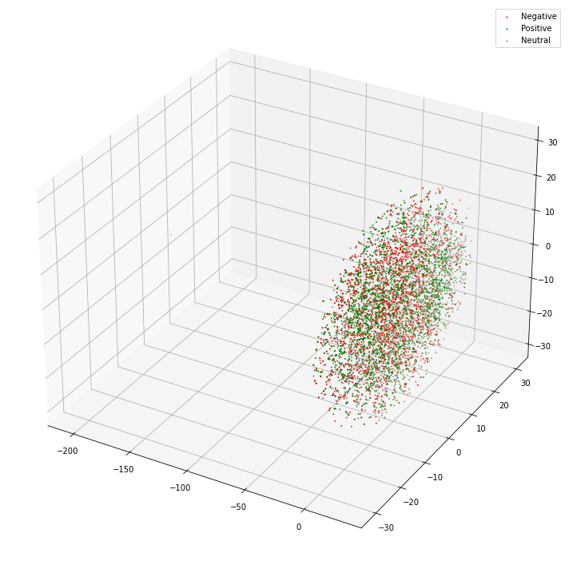
# ## Visualize TSNE - 2D
# fig,ax = plt.subplots(figsize=(20,10))
# # ax = fig.add_subplot(projection='3d')
# ax.scatter(neg_tsne[:,0],neg_tsne[:,1], s=1, c='red',label='Negative')
# ax.scatter(pos_tsne[:,0],pos_tsne[:,1], s=1,c='green',label='Positive')
# ax.scatter(neut_tsne[:,0],neut_tsne[:,1], s=1,c='gray',label='Neutral')
# ax.legend()
# # ax.view_init(30, 10)
# fig.tight_layout()
/opt/anaconda3/envs/learn-env-new/lib/python3.8/site-packages/ipykernel/ipkernel.py:283: DeprecationWarning: `should_run_async` will not call `transform_cell` automatically in the future. Please pass the result to `transformed_cell` argument and any exception that happen during thetransform in `preprocessing_exc_tuple` in IPython 7.17 and above.
and should_run_async(code)
Latent Dirichilet Allocation#
from sklearn.decomposition import LatentDirichletAllocation
lda = LatentDirichletAllocation(n_components=5,verbose=1,random_state=0)
lda.fit(X_train_vec)
iteration: 1 of max_iter: 10
iteration: 2 of max_iter: 10
iteration: 3 of max_iter: 10
iteration: 4 of max_iter: 10
iteration: 5 of max_iter: 10
iteration: 6 of max_iter: 10
iteration: 7 of max_iter: 10
iteration: 8 of max_iter: 10
iteration: 9 of max_iter: 10
iteration: 10 of max_iter: 10
LatentDirichletAllocation(n_components=5, random_state=0, verbose=1)
PyLDAvis#
# !pip install pyldavis
import pyLDAvis
import pyLDAvis.sklearn as lda_sk
pyLDAvis.enable_notebook()
lda_sk.prepare(lda,X_train_vec,text_pipe['vectorizer'])
/opt/anaconda3/envs/learn-env-new/lib/python3.8/site-packages/ipykernel/ipkernel.py:283: DeprecationWarning: `should_run_async` will not call `transform_cell` automatically in the future. Please pass the result to `transformed_cell` argument and any exception that happen during thetransform in `preprocessing_exc_tuple` in IPython 7.17 and above.
and should_run_async(code)
pyLDAvis.disable_notebook()
/opt/anaconda3/envs/learn-env-new/lib/python3.8/site-packages/ipykernel/ipkernel.py:283: DeprecationWarning: `should_run_async` will not call `transform_cell` automatically in the future. Please pass the result to `transformed_cell` argument and any exception that happen during thetransform in `preprocessing_exc_tuple` in IPython 7.17 and above.
and should_run_async(code)
# raise Exception('stop here for study group')a
/opt/anaconda3/envs/learn-env-new/lib/python3.8/site-packages/ipykernel/ipkernel.py:283: DeprecationWarning: `should_run_async` will not call `transform_cell` automatically in the future. Please pass the result to `transformed_cell` argument and any exception that happen during thetransform in `preprocessing_exc_tuple` in IPython 7.17 and above.
and should_run_async(code)
Models#
Model Evaluation Functions#
def evaluate_classification(model, X_test_tf,y_test,cmap='Greens',
normalize='true',classes=None,figsize=(10,4),
X_train = None, y_train = None,):
"""Evaluates a scikit-learn binary classification model.
Args:
model (classifier): any sklearn classification model.
X_test_tf (Frame or Array): X data
y_test (Series or Array): y data
cmap (str, optional): Colormap for confusion matrix. Defaults to 'Greens'.
normalize (str, optional): normalize argument for plot_confusion_matrix.
Defaults to 'true'.
classes (list, optional): List of class names for display. Defaults to None.
figsize (tuple, optional): figure size Defaults to (8,4).
X_train (Frame or Array, optional): If provided, compare model.score
for train and test. Defaults to None.
y_train (Series or Array, optional): If provided, compare model.score
for train and test. Defaults to None.
"""
## Get Predictions and Classification Report
y_hat_test = model.predict(X_test_tf)
print(metrics.classification_report(y_test, y_hat_test,target_names=classes))
## Plot Confusion Matrid and roc curve
fig,ax = plt.subplots(ncols=2, figsize=figsize)
metrics.plot_confusion_matrix(model, X_test_tf,y_test,cmap=cmap,
normalize=normalize,display_labels=classes,
ax=ax[0])
## if roc curve erorrs, delete second ax
try:
curve = metrics.plot_roc_curve(model,X_test_tf,y_test,ax=ax[1])
curve.ax_.grid()
curve.ax_.plot([0,1],[0,1],ls=':')
fig.tight_layout()
except:
fig.delaxes(ax[1])
plt.show()
## Add comparing Scores if X_train and y_train provided.
if (X_train is not None) & (y_train is not None):
print(f"Training Score = {model.score(X_train,y_train):.2f}")
print(f"Test Score = {model.score(X_test_tf,y_test):.2f}")
def plot_importance(tree, X_train_df, top_n=20,figsize=(10,10)):
df_importance = pd.Series(tree.feature_importances_,
index=X_train_df.columns)
df_importance.sort_values(ascending=True).tail(top_n).plot(
kind='barh',figsize=figsize,title='Feature Importances',
ylabel='Feature',)
return df_importance
/opt/anaconda3/envs/learn-env-new/lib/python3.8/site-packages/ipykernel/ipkernel.py:283: DeprecationWarning: `should_run_async` will not call `transform_cell` automatically in the future. Please pass the result to `transformed_cell` argument and any exception that happen during thetransform in `preprocessing_exc_tuple` in IPython 7.17 and above.
and should_run_async(code)
Modeling Logistics#
Use the same variable name for each of the types of models to fit to save memory.
After evaluating, save the model with joblib as f”last_{model type}.joblib”
Load up the models after training if want to get insights or compare.
import os,joblib
save_path = "./models/"
os.makedirs(save_path, exist_ok=True)
sorted(os.listdir(save_path))
/opt/anaconda3/envs/learn-env-new/lib/python3.8/site-packages/ipykernel/ipkernel.py:283: DeprecationWarning: `should_run_async` will not call `transform_cell` automatically in the future. Please pass the result to `transformed_cell` argument and any exception that happen during thetransform in `preprocessing_exc_tuple` in IPython 7.17 and above.
and should_run_async(code)
['gridsearch_log_reg.joblib',
'log_reg_best_C.joblib',
'log_reg_ce12.joblib',
'log_reg_cv.joblib',
'naive_bayes.joblib',
'random_forest.joblib',
'svc_linear.joblib']
Model 1: LogisticRegression#
from sklearn.linear_model import LogisticRegression,LogisticRegressionCV
from sklearn import metrics
/opt/anaconda3/envs/learn-env-new/lib/python3.8/site-packages/ipykernel/ipkernel.py:283: DeprecationWarning: `should_run_async` will not call `transform_cell` automatically in the future. Please pass the result to `transformed_cell` argument and any exception that happen during thetransform in `preprocessing_exc_tuple` in IPython 7.17 and above.
and should_run_async(code)
Vanilla LogReg, no regularization#
y_train.value_counts(1).sort_index()
/opt/anaconda3/envs/learn-env-new/lib/python3.8/site-packages/ipykernel/ipkernel.py:283: DeprecationWarning: `should_run_async` will not call `transform_cell` automatically in the future. Please pass the result to `transformed_cell` argument and any exception that happen during thetransform in `preprocessing_exc_tuple` in IPython 7.17 and above.
and should_run_async(code)
0 0.378230
1 0.189698
2 0.432072
Name: target_3class, dtype: float64
sns.countplot(y_train)
/opt/anaconda3/envs/learn-env-new/lib/python3.8/site-packages/ipykernel/ipkernel.py:283: DeprecationWarning: `should_run_async` will not call `transform_cell` automatically in the future. Please pass the result to `transformed_cell` argument and any exception that happen during thetransform in `preprocessing_exc_tuple` in IPython 7.17 and above.
and should_run_async(code)
/opt/anaconda3/envs/learn-env-new/lib/python3.8/site-packages/seaborn/_decorators.py:36: FutureWarning: Pass the following variable as a keyword arg: x. From version 0.12, the only valid positional argument will be `data`, and passing other arguments without an explicit keyword will result in an error or misinterpretation.
warnings.warn(
<AxesSubplot:xlabel='target_3class', ylabel='count'>
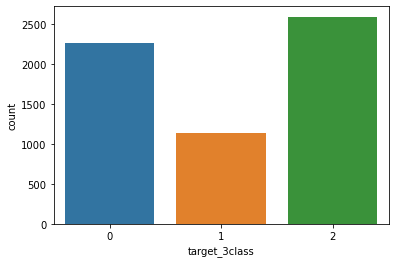
## Log reg- not using classweight
clf = LogisticRegression(C=1e12, max_iter=300)
clf.fit(X_train_vec,y_train)
evaluate_classification(clf,X_test_vec, y_test,X_train = X_train_vec,y_train=y_train)
joblib.dump(clf, f"{save_path}log_reg_ce12.joblib")
/opt/anaconda3/envs/learn-env-new/lib/python3.8/site-packages/ipykernel/ipkernel.py:283: DeprecationWarning: `should_run_async` will not call `transform_cell` automatically in the future. Please pass the result to `transformed_cell` argument and any exception that happen during thetransform in `preprocessing_exc_tuple` in IPython 7.17 and above.
and should_run_async(code)
precision recall f1-score support
0 0.71 0.73 0.72 1564
1 0.53 0.44 0.48 737
2 0.71 0.75 0.73 1699
accuracy 0.68 4000
macro avg 0.65 0.64 0.64 4000
weighted avg 0.68 0.68 0.68 4000
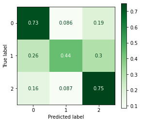
Training Score = 1.00
Test Score = 0.68
['./models/log_reg_ce12.joblib']
clf = LogisticRegression(C=1e12,class_weight='balanced', max_iter=300)
clf.fit(X_train_vec,y_train)
evaluate_classification(clf,X_test_vec, y_test,X_train = X_train_vec,y_train=y_train)
joblib.dump(clf, f"{save_path}log_reg_ce12.joblib")
/opt/anaconda3/envs/learn-env-new/lib/python3.8/site-packages/ipykernel/ipkernel.py:283: DeprecationWarning: `should_run_async` will not call `transform_cell` automatically in the future. Please pass the result to `transformed_cell` argument and any exception that happen during thetransform in `preprocessing_exc_tuple` in IPython 7.17 and above.
and should_run_async(code)
precision recall f1-score support
0 0.71 0.71 0.71 1564
1 0.53 0.44 0.48 737
2 0.71 0.76 0.73 1699
accuracy 0.68 4000
macro avg 0.65 0.64 0.64 4000
weighted avg 0.67 0.68 0.68 4000
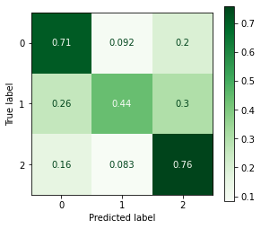
Training Score = 1.00
Test Score = 0.68
['./models/log_reg_ce12.joblib']
GridSearch for C#
clf = LogisticRegressionCV(class_weight='balanced',max_iter=300,cv=3,
scoring='recall_macro',n_jobs=-1,verbose=2)
clf.fit(X_train_vec,y_train)
evaluate_classification(clf,X_test_vec,y_test,X_train = X_train_vec,y_train=y_train)
print(clf.C_)
joblib.dump(clf, f"{save_path}log_reg_cv.joblib")
/opt/anaconda3/envs/learn-env-new/lib/python3.8/site-packages/ipykernel/ipkernel.py:283: DeprecationWarning: `should_run_async` will not call `transform_cell` automatically in the future. Please pass the result to `transformed_cell` argument and any exception that happen during thetransform in `preprocessing_exc_tuple` in IPython 7.17 and above.
and should_run_async(code)
[Parallel(n_jobs=-1)]: Using backend LokyBackend with 12 concurrent workers.
[Parallel(n_jobs=-1)]: Done 3 out of 3 | elapsed: 13.4s finished
precision recall f1-score support
0 0.71 0.70 0.71 1564
1 0.50 0.57 0.53 737
2 0.75 0.71 0.73 1699
accuracy 0.68 4000
macro avg 0.65 0.66 0.65 4000
weighted avg 0.69 0.68 0.68 4000
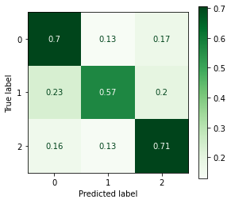
Training Score = 0.99
Test Score = 0.66
[2.7825594 2.7825594 2.7825594]
['./models/log_reg_cv.joblib']
best_C = 2.7825594
clf = LogisticRegression(C=best_C,class_weight='balanced', max_iter=300)
clf.fit(X_train_vec,y_train)
evaluate_classification(clf,X_test_vec,y_test,X_train = X_train_vec,y_train=y_train)
joblib.dump(clf,f"{save_path}log_reg_best_C.joblib")
/opt/anaconda3/envs/learn-env-new/lib/python3.8/site-packages/ipykernel/ipkernel.py:283: DeprecationWarning: `should_run_async` will not call `transform_cell` automatically in the future. Please pass the result to `transformed_cell` argument and any exception that happen during thetransform in `preprocessing_exc_tuple` in IPython 7.17 and above.
and should_run_async(code)
precision recall f1-score support
0 0.71 0.70 0.71 1564
1 0.50 0.57 0.53 737
2 0.75 0.71 0.73 1699
accuracy 0.68 4000
macro avg 0.65 0.66 0.65 4000
weighted avg 0.69 0.68 0.68 4000
Training Score = 0.99
Test Score = 0.68
['./models/log_reg_best_C.joblib']
LogReg Full GridSearch#
## logreg gridsearch
clf = LogisticRegression(class_weight='balanced',solver='saga')
params = {'C':[1.0,3,10],
'penalty':['elasticnet','l2','l1']
}
gridsearch = GridSearchCV(clf,params,cv=3, scoring='recall_macro',
verbose=True, n_jobs=-1)
gridsearch.fit(X_train_vec,y_train)
print(gridsearch.best_params_)
evaluate_classification(gridsearch.best_estimator_, X_test_vec,y_test,
X_train = X_train_vec,y_train=y_train)
joblib.dump(gridsearch.best_estimator_,f"{save_path}gridsearch_log_reg.joblib")
Fitting 3 folds for each of 9 candidates, totalling 27 fits
/opt/anaconda3/envs/learn-env-new/lib/python3.8/site-packages/ipykernel/ipkernel.py:283: DeprecationWarning: `should_run_async` will not call `transform_cell` automatically in the future. Please pass the result to `transformed_cell` argument and any exception that happen during thetransform in `preprocessing_exc_tuple` in IPython 7.17 and above.
and should_run_async(code)
[Parallel(n_jobs=-1)]: Using backend LokyBackend with 12 concurrent workers.
[Parallel(n_jobs=-1)]: Done 27 out of 27 | elapsed: 12.9s finished
/opt/anaconda3/envs/learn-env-new/lib/python3.8/site-packages/sklearn/model_selection/_search.py:844: DeprecationWarning: `np.int` is a deprecated alias for the builtin `int`. To silence this warning, use `int` by itself. Doing this will not modify any behavior and is safe. When replacing `np.int`, you may wish to use e.g. `np.int64` or `np.int32` to specify the precision. If you wish to review your current use, check the release note link for additional information.
Deprecated in NumPy 1.20; for more details and guidance: https://numpy.org/devdocs/release/1.20.0-notes.html#deprecations
dtype=np.int)
/opt/anaconda3/envs/learn-env-new/lib/python3.8/site-packages/sklearn/linear_model/_sag.py:329: ConvergenceWarning: The max_iter was reached which means the coef_ did not converge
warnings.warn("The max_iter was reached which means "
{'C': 3, 'penalty': 'l1'}
precision recall f1-score support
0 0.78 0.71 0.74 1564
1 0.51 0.72 0.60 737
2 0.81 0.73 0.77 1699
accuracy 0.72 4000
macro avg 0.70 0.72 0.70 4000
weighted avg 0.74 0.72 0.73 4000
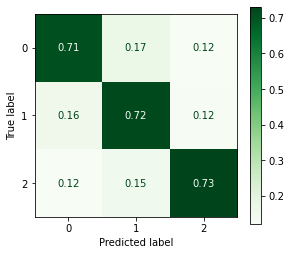
Training Score = 0.89
Test Score = 0.72
['./models/gridsearch_log_reg.joblib']
Testing Preprocessing Options using GridSearch#
LogReg+Text Pipe GridSearch#
## set up text preprocessing pipeline
tokenizer = TweetTokenizer(preserve_case=False,strip_handles=False)
text_pipe_grid = Pipeline([
('vectorizer',CountVectorizer(strip_accents='unicode',
tokenizer=tokenizer.tokenize,
stop_words=None)),#=stopwords_list)),
('tfidf',TfidfTransformer())
])
full_pipe = Pipeline([
('text',text_pipe_grid),
('clf',LogisticRegression(class_weight='balanced',solver='saga'))
])
full_pipe
/opt/anaconda3/envs/learn-env-new/lib/python3.8/site-packages/ipykernel/ipkernel.py:283: DeprecationWarning: `should_run_async` will not call `transform_cell` automatically in the future. Please pass the result to `transformed_cell` argument and any exception that happen during thetransform in `preprocessing_exc_tuple` in IPython 7.17 and above.
and should_run_async(code)
Pipeline(steps=[('text',
Pipeline(steps=[('vectorizer',
CountVectorizer(strip_accents='unicode',
tokenizer=>)),
('tfidf', TfidfTransformer())])),
('clf',
LogisticRegression(class_weight='balanced', solver='saga'))]) Pipeline(steps=[('vectorizer',
CountVectorizer(strip_accents='unicode',
tokenizer=>)),
('tfidf', TfidfTransformer())]) CountVectorizer(strip_accents='unicode',
tokenizer=>) TfidfTransformer()
LogisticRegression(class_weight='balanced', solver='saga')
## Checking params for text
full_pipe.named_steps['text'].named_steps['vectorizer']
/opt/anaconda3/envs/learn-env-new/lib/python3.8/site-packages/ipykernel/ipkernel.py:283: DeprecationWarning: `should_run_async` will not call `transform_cell` automatically in the future. Please pass the result to `transformed_cell` argument and any exception that happen during thetransform in `preprocessing_exc_tuple` in IPython 7.17 and above.
and should_run_async(code)
CountVectorizer(strip_accents='unicode',
tokenizer=>) ## logreg gridsearch
# clf = LogisticRegression(class_weight='balanced',solver='saga')
full_pipe.named_steps['clf'] = LogisticRegression(class_weight='balanced',penalty='l1',
solver='sag')
params = {'clf__C':[1,3,5,10],
# 'clf__solver':['saga','sag'],
'text__vectorizer__stop_words':[None, stopwords_list],
'text__vectorizer__tokenizer':[tokenizer.tokenize,
lambda x: regexp_tokenize(x, pattern)]
}
gridsearch = GridSearchCV(full_pipe,params,cv=3, scoring='f1_macro',
verbose=2, n_jobs=-1)
gridsearch.fit(X_train,y_train)
print(gridsearch.best_params_)
evaluate_classification(gridsearch.best_estimator_, X_test,y_test,
X_train = X_train,y_train=y_train)
# joblib.dump(gridsearch.best_estimator_,f"{save_path}gridsearch_log_reg.joblib")
Fitting 3 folds for each of 16 candidates, totalling 48 fits
/opt/anaconda3/envs/learn-env-new/lib/python3.8/site-packages/ipykernel/ipkernel.py:283: DeprecationWarning: `should_run_async` will not call `transform_cell` automatically in the future. Please pass the result to `transformed_cell` argument and any exception that happen during thetransform in `preprocessing_exc_tuple` in IPython 7.17 and above.
and should_run_async(code)
[Parallel(n_jobs=-1)]: Using backend LokyBackend with 12 concurrent workers.
[Parallel(n_jobs=-1)]: Done 17 tasks | elapsed: 6.4s
[Parallel(n_jobs=-1)]: Done 48 out of 48 | elapsed: 14.6s finished
/opt/anaconda3/envs/learn-env-new/lib/python3.8/site-packages/sklearn/model_selection/_search.py:844: DeprecationWarning: `np.int` is a deprecated alias for the builtin `int`. To silence this warning, use `int` by itself. Doing this will not modify any behavior and is safe. When replacing `np.int`, you may wish to use e.g. `np.int64` or `np.int32` to specify the precision. If you wish to review your current use, check the release note link for additional information.
Deprecated in NumPy 1.20; for more details and guidance: https://numpy.org/devdocs/release/1.20.0-notes.html#deprecations
dtype=np.int)
{'clf__C': 10, 'text__vectorizer__stop_words': None, 'text__vectorizer__tokenizer': <function <lambda> at 0x7fe7f2af8040>}
precision recall f1-score support
0 0.73 0.71 0.72 1564
1 0.51 0.54 0.53 737
2 0.73 0.72 0.73 1699
accuracy 0.69 4000
macro avg 0.66 0.66 0.66 4000
weighted avg 0.69 0.69 0.69 4000
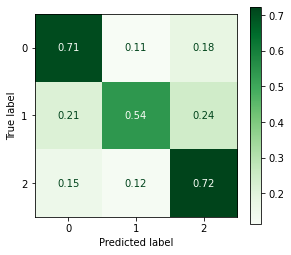
Training Score = 1.00
Test Score = 0.69
RandomForest#
clf = RandomForestClassifier(class_weight='balanced')
clf.fit(X_train_vec,y_train)
evaluate_classification(clf,X_test_vec,y_test,
X_train = X_train_vec, y_train=y_train)
joblib.dump(clf,f"{save_path}random_forest.joblib",compress=3)
/opt/anaconda3/envs/learn-env-new/lib/python3.8/site-packages/ipykernel/ipkernel.py:283: DeprecationWarning: `should_run_async` will not call `transform_cell` automatically in the future. Please pass the result to `transformed_cell` argument and any exception that happen during thetransform in `preprocessing_exc_tuple` in IPython 7.17 and above.
and should_run_async(code)
/opt/anaconda3/envs/learn-env-new/lib/python3.8/site-packages/sklearn/ensemble/_forest.py:569: DeprecationWarning: `np.int` is a deprecated alias for the builtin `int`. To silence this warning, use `int` by itself. Doing this will not modify any behavior and is safe. When replacing `np.int`, you may wish to use e.g. `np.int64` or `np.int32` to specify the precision. If you wish to review your current use, check the release note link for additional information.
Deprecated in NumPy 1.20; for more details and guidance: https://numpy.org/devdocs/release/1.20.0-notes.html#deprecations
y_store_unique_indices = np.zeros(y.shape, dtype=np.int)
/opt/anaconda3/envs/learn-env-new/lib/python3.8/site-packages/sklearn/tree/_classes.py:190: DeprecationWarning: `np.int` is a deprecated alias for the builtin `int`. To silence this warning, use `int` by itself. Doing this will not modify any behavior and is safe. When replacing `np.int`, you may wish to use e.g. `np.int64` or `np.int32` to specify the precision. If you wish to review your current use, check the release note link for additional information.
Deprecated in NumPy 1.20; for more details and guidance: https://numpy.org/devdocs/release/1.20.0-notes.html#deprecations
y_encoded = np.zeros(y.shape, dtype=np.int)
/opt/anaconda3/envs/learn-env-new/lib/python3.8/site-packages/sklearn/tree/_classes.py:190: DeprecationWarning: `np.int` is a deprecated alias for the builtin `int`. To silence this warning, use `int` by itself. Doing this will not modify any behavior and is safe. When replacing `np.int`, you may wish to use e.g. `np.int64` or `np.int32` to specify the precision. If you wish to review your current use, check the release note link for additional information.
Deprecated in NumPy 1.20; for more details and guidance: https://numpy.org/devdocs/release/1.20.0-notes.html#deprecations
y_encoded = np.zeros(y.shape, dtype=np.int)
/opt/anaconda3/envs/learn-env-new/lib/python3.8/site-packages/sklearn/tree/_classes.py:190: DeprecationWarning: `np.int` is a deprecated alias for the builtin `int`. To silence this warning, use `int` by itself. Doing this will not modify any behavior and is safe. When replacing `np.int`, you may wish to use e.g. `np.int64` or `np.int32` to specify the precision. If you wish to review your current use, check the release note link for additional information.
Deprecated in NumPy 1.20; for more details and guidance: https://numpy.org/devdocs/release/1.20.0-notes.html#deprecations
y_encoded = np.zeros(y.shape, dtype=np.int)
/opt/anaconda3/envs/learn-env-new/lib/python3.8/site-packages/sklearn/tree/_classes.py:190: DeprecationWarning: `np.int` is a deprecated alias for the builtin `int`. To silence this warning, use `int` by itself. Doing this will not modify any behavior and is safe. When replacing `np.int`, you may wish to use e.g. `np.int64` or `np.int32` to specify the precision. If you wish to review your current use, check the release note link for additional information.
Deprecated in NumPy 1.20; for more details and guidance: https://numpy.org/devdocs/release/1.20.0-notes.html#deprecations
y_encoded = np.zeros(y.shape, dtype=np.int)
/opt/anaconda3/envs/learn-env-new/lib/python3.8/site-packages/sklearn/tree/_classes.py:190: DeprecationWarning: `np.int` is a deprecated alias for the builtin `int`. To silence this warning, use `int` by itself. Doing this will not modify any behavior and is safe. When replacing `np.int`, you may wish to use e.g. `np.int64` or `np.int32` to specify the precision. If you wish to review your current use, check the release note link for additional information.
Deprecated in NumPy 1.20; for more details and guidance: https://numpy.org/devdocs/release/1.20.0-notes.html#deprecations
y_encoded = np.zeros(y.shape, dtype=np.int)
/opt/anaconda3/envs/learn-env-new/lib/python3.8/site-packages/sklearn/tree/_classes.py:190: DeprecationWarning: `np.int` is a deprecated alias for the builtin `int`. To silence this warning, use `int` by itself. Doing this will not modify any behavior and is safe. When replacing `np.int`, you may wish to use e.g. `np.int64` or `np.int32` to specify the precision. If you wish to review your current use, check the release note link for additional information.
Deprecated in NumPy 1.20; for more details and guidance: https://numpy.org/devdocs/release/1.20.0-notes.html#deprecations
y_encoded = np.zeros(y.shape, dtype=np.int)
/opt/anaconda3/envs/learn-env-new/lib/python3.8/site-packages/sklearn/tree/_classes.py:190: DeprecationWarning: `np.int` is a deprecated alias for the builtin `int`. To silence this warning, use `int` by itself. Doing this will not modify any behavior and is safe. When replacing `np.int`, you may wish to use e.g. `np.int64` or `np.int32` to specify the precision. If you wish to review your current use, check the release note link for additional information.
Deprecated in NumPy 1.20; for more details and guidance: https://numpy.org/devdocs/release/1.20.0-notes.html#deprecations
y_encoded = np.zeros(y.shape, dtype=np.int)
/opt/anaconda3/envs/learn-env-new/lib/python3.8/site-packages/sklearn/tree/_classes.py:190: DeprecationWarning: `np.int` is a deprecated alias for the builtin `int`. To silence this warning, use `int` by itself. Doing this will not modify any behavior and is safe. When replacing `np.int`, you may wish to use e.g. `np.int64` or `np.int32` to specify the precision. If you wish to review your current use, check the release note link for additional information.
Deprecated in NumPy 1.20; for more details and guidance: https://numpy.org/devdocs/release/1.20.0-notes.html#deprecations
y_encoded = np.zeros(y.shape, dtype=np.int)
/opt/anaconda3/envs/learn-env-new/lib/python3.8/site-packages/sklearn/tree/_classes.py:190: DeprecationWarning: `np.int` is a deprecated alias for the builtin `int`. To silence this warning, use `int` by itself. Doing this will not modify any behavior and is safe. When replacing `np.int`, you may wish to use e.g. `np.int64` or `np.int32` to specify the precision. If you wish to review your current use, check the release note link for additional information.
Deprecated in NumPy 1.20; for more details and guidance: https://numpy.org/devdocs/release/1.20.0-notes.html#deprecations
y_encoded = np.zeros(y.shape, dtype=np.int)
/opt/anaconda3/envs/learn-env-new/lib/python3.8/site-packages/sklearn/tree/_classes.py:190: DeprecationWarning: `np.int` is a deprecated alias for the builtin `int`. To silence this warning, use `int` by itself. Doing this will not modify any behavior and is safe. When replacing `np.int`, you may wish to use e.g. `np.int64` or `np.int32` to specify the precision. If you wish to review your current use, check the release note link for additional information.
Deprecated in NumPy 1.20; for more details and guidance: https://numpy.org/devdocs/release/1.20.0-notes.html#deprecations
y_encoded = np.zeros(y.shape, dtype=np.int)
/opt/anaconda3/envs/learn-env-new/lib/python3.8/site-packages/sklearn/tree/_classes.py:190: DeprecationWarning: `np.int` is a deprecated alias for the builtin `int`. To silence this warning, use `int` by itself. Doing this will not modify any behavior and is safe. When replacing `np.int`, you may wish to use e.g. `np.int64` or `np.int32` to specify the precision. If you wish to review your current use, check the release note link for additional information.
Deprecated in NumPy 1.20; for more details and guidance: https://numpy.org/devdocs/release/1.20.0-notes.html#deprecations
y_encoded = np.zeros(y.shape, dtype=np.int)
/opt/anaconda3/envs/learn-env-new/lib/python3.8/site-packages/sklearn/tree/_classes.py:190: DeprecationWarning: `np.int` is a deprecated alias for the builtin `int`. To silence this warning, use `int` by itself. Doing this will not modify any behavior and is safe. When replacing `np.int`, you may wish to use e.g. `np.int64` or `np.int32` to specify the precision. If you wish to review your current use, check the release note link for additional information.
Deprecated in NumPy 1.20; for more details and guidance: https://numpy.org/devdocs/release/1.20.0-notes.html#deprecations
y_encoded = np.zeros(y.shape, dtype=np.int)
/opt/anaconda3/envs/learn-env-new/lib/python3.8/site-packages/sklearn/tree/_classes.py:190: DeprecationWarning: `np.int` is a deprecated alias for the builtin `int`. To silence this warning, use `int` by itself. Doing this will not modify any behavior and is safe. When replacing `np.int`, you may wish to use e.g. `np.int64` or `np.int32` to specify the precision. If you wish to review your current use, check the release note link for additional information.
Deprecated in NumPy 1.20; for more details and guidance: https://numpy.org/devdocs/release/1.20.0-notes.html#deprecations
y_encoded = np.zeros(y.shape, dtype=np.int)
/opt/anaconda3/envs/learn-env-new/lib/python3.8/site-packages/sklearn/tree/_classes.py:190: DeprecationWarning: `np.int` is a deprecated alias for the builtin `int`. To silence this warning, use `int` by itself. Doing this will not modify any behavior and is safe. When replacing `np.int`, you may wish to use e.g. `np.int64` or `np.int32` to specify the precision. If you wish to review your current use, check the release note link for additional information.
Deprecated in NumPy 1.20; for more details and guidance: https://numpy.org/devdocs/release/1.20.0-notes.html#deprecations
y_encoded = np.zeros(y.shape, dtype=np.int)
/opt/anaconda3/envs/learn-env-new/lib/python3.8/site-packages/sklearn/tree/_classes.py:190: DeprecationWarning: `np.int` is a deprecated alias for the builtin `int`. To silence this warning, use `int` by itself. Doing this will not modify any behavior and is safe. When replacing `np.int`, you may wish to use e.g. `np.int64` or `np.int32` to specify the precision. If you wish to review your current use, check the release note link for additional information.
Deprecated in NumPy 1.20; for more details and guidance: https://numpy.org/devdocs/release/1.20.0-notes.html#deprecations
y_encoded = np.zeros(y.shape, dtype=np.int)
/opt/anaconda3/envs/learn-env-new/lib/python3.8/site-packages/sklearn/tree/_classes.py:190: DeprecationWarning: `np.int` is a deprecated alias for the builtin `int`. To silence this warning, use `int` by itself. Doing this will not modify any behavior and is safe. When replacing `np.int`, you may wish to use e.g. `np.int64` or `np.int32` to specify the precision. If you wish to review your current use, check the release note link for additional information.
Deprecated in NumPy 1.20; for more details and guidance: https://numpy.org/devdocs/release/1.20.0-notes.html#deprecations
y_encoded = np.zeros(y.shape, dtype=np.int)
/opt/anaconda3/envs/learn-env-new/lib/python3.8/site-packages/sklearn/tree/_classes.py:190: DeprecationWarning: `np.int` is a deprecated alias for the builtin `int`. To silence this warning, use `int` by itself. Doing this will not modify any behavior and is safe. When replacing `np.int`, you may wish to use e.g. `np.int64` or `np.int32` to specify the precision. If you wish to review your current use, check the release note link for additional information.
Deprecated in NumPy 1.20; for more details and guidance: https://numpy.org/devdocs/release/1.20.0-notes.html#deprecations
y_encoded = np.zeros(y.shape, dtype=np.int)
/opt/anaconda3/envs/learn-env-new/lib/python3.8/site-packages/sklearn/tree/_classes.py:190: DeprecationWarning: `np.int` is a deprecated alias for the builtin `int`. To silence this warning, use `int` by itself. Doing this will not modify any behavior and is safe. When replacing `np.int`, you may wish to use e.g. `np.int64` or `np.int32` to specify the precision. If you wish to review your current use, check the release note link for additional information.
Deprecated in NumPy 1.20; for more details and guidance: https://numpy.org/devdocs/release/1.20.0-notes.html#deprecations
y_encoded = np.zeros(y.shape, dtype=np.int)
/opt/anaconda3/envs/learn-env-new/lib/python3.8/site-packages/sklearn/tree/_classes.py:190: DeprecationWarning: `np.int` is a deprecated alias for the builtin `int`. To silence this warning, use `int` by itself. Doing this will not modify any behavior and is safe. When replacing `np.int`, you may wish to use e.g. `np.int64` or `np.int32` to specify the precision. If you wish to review your current use, check the release note link for additional information.
Deprecated in NumPy 1.20; for more details and guidance: https://numpy.org/devdocs/release/1.20.0-notes.html#deprecations
y_encoded = np.zeros(y.shape, dtype=np.int)
/opt/anaconda3/envs/learn-env-new/lib/python3.8/site-packages/sklearn/tree/_classes.py:190: DeprecationWarning: `np.int` is a deprecated alias for the builtin `int`. To silence this warning, use `int` by itself. Doing this will not modify any behavior and is safe. When replacing `np.int`, you may wish to use e.g. `np.int64` or `np.int32` to specify the precision. If you wish to review your current use, check the release note link for additional information.
Deprecated in NumPy 1.20; for more details and guidance: https://numpy.org/devdocs/release/1.20.0-notes.html#deprecations
y_encoded = np.zeros(y.shape, dtype=np.int)
/opt/anaconda3/envs/learn-env-new/lib/python3.8/site-packages/sklearn/tree/_classes.py:190: DeprecationWarning: `np.int` is a deprecated alias for the builtin `int`. To silence this warning, use `int` by itself. Doing this will not modify any behavior and is safe. When replacing `np.int`, you may wish to use e.g. `np.int64` or `np.int32` to specify the precision. If you wish to review your current use, check the release note link for additional information.
Deprecated in NumPy 1.20; for more details and guidance: https://numpy.org/devdocs/release/1.20.0-notes.html#deprecations
y_encoded = np.zeros(y.shape, dtype=np.int)
/opt/anaconda3/envs/learn-env-new/lib/python3.8/site-packages/sklearn/tree/_classes.py:190: DeprecationWarning: `np.int` is a deprecated alias for the builtin `int`. To silence this warning, use `int` by itself. Doing this will not modify any behavior and is safe. When replacing `np.int`, you may wish to use e.g. `np.int64` or `np.int32` to specify the precision. If you wish to review your current use, check the release note link for additional information.
Deprecated in NumPy 1.20; for more details and guidance: https://numpy.org/devdocs/release/1.20.0-notes.html#deprecations
y_encoded = np.zeros(y.shape, dtype=np.int)
/opt/anaconda3/envs/learn-env-new/lib/python3.8/site-packages/sklearn/tree/_classes.py:190: DeprecationWarning: `np.int` is a deprecated alias for the builtin `int`. To silence this warning, use `int` by itself. Doing this will not modify any behavior and is safe. When replacing `np.int`, you may wish to use e.g. `np.int64` or `np.int32` to specify the precision. If you wish to review your current use, check the release note link for additional information.
Deprecated in NumPy 1.20; for more details and guidance: https://numpy.org/devdocs/release/1.20.0-notes.html#deprecations
y_encoded = np.zeros(y.shape, dtype=np.int)
/opt/anaconda3/envs/learn-env-new/lib/python3.8/site-packages/sklearn/tree/_classes.py:190: DeprecationWarning: `np.int` is a deprecated alias for the builtin `int`. To silence this warning, use `int` by itself. Doing this will not modify any behavior and is safe. When replacing `np.int`, you may wish to use e.g. `np.int64` or `np.int32` to specify the precision. If you wish to review your current use, check the release note link for additional information.
Deprecated in NumPy 1.20; for more details and guidance: https://numpy.org/devdocs/release/1.20.0-notes.html#deprecations
y_encoded = np.zeros(y.shape, dtype=np.int)
/opt/anaconda3/envs/learn-env-new/lib/python3.8/site-packages/sklearn/tree/_classes.py:190: DeprecationWarning: `np.int` is a deprecated alias for the builtin `int`. To silence this warning, use `int` by itself. Doing this will not modify any behavior and is safe. When replacing `np.int`, you may wish to use e.g. `np.int64` or `np.int32` to specify the precision. If you wish to review your current use, check the release note link for additional information.
Deprecated in NumPy 1.20; for more details and guidance: https://numpy.org/devdocs/release/1.20.0-notes.html#deprecations
y_encoded = np.zeros(y.shape, dtype=np.int)
/opt/anaconda3/envs/learn-env-new/lib/python3.8/site-packages/sklearn/tree/_classes.py:190: DeprecationWarning: `np.int` is a deprecated alias for the builtin `int`. To silence this warning, use `int` by itself. Doing this will not modify any behavior and is safe. When replacing `np.int`, you may wish to use e.g. `np.int64` or `np.int32` to specify the precision. If you wish to review your current use, check the release note link for additional information.
Deprecated in NumPy 1.20; for more details and guidance: https://numpy.org/devdocs/release/1.20.0-notes.html#deprecations
y_encoded = np.zeros(y.shape, dtype=np.int)
/opt/anaconda3/envs/learn-env-new/lib/python3.8/site-packages/sklearn/tree/_classes.py:190: DeprecationWarning: `np.int` is a deprecated alias for the builtin `int`. To silence this warning, use `int` by itself. Doing this will not modify any behavior and is safe. When replacing `np.int`, you may wish to use e.g. `np.int64` or `np.int32` to specify the precision. If you wish to review your current use, check the release note link for additional information.
Deprecated in NumPy 1.20; for more details and guidance: https://numpy.org/devdocs/release/1.20.0-notes.html#deprecations
y_encoded = np.zeros(y.shape, dtype=np.int)
/opt/anaconda3/envs/learn-env-new/lib/python3.8/site-packages/sklearn/tree/_classes.py:190: DeprecationWarning: `np.int` is a deprecated alias for the builtin `int`. To silence this warning, use `int` by itself. Doing this will not modify any behavior and is safe. When replacing `np.int`, you may wish to use e.g. `np.int64` or `np.int32` to specify the precision. If you wish to review your current use, check the release note link for additional information.
Deprecated in NumPy 1.20; for more details and guidance: https://numpy.org/devdocs/release/1.20.0-notes.html#deprecations
y_encoded = np.zeros(y.shape, dtype=np.int)
/opt/anaconda3/envs/learn-env-new/lib/python3.8/site-packages/sklearn/tree/_classes.py:190: DeprecationWarning: `np.int` is a deprecated alias for the builtin `int`. To silence this warning, use `int` by itself. Doing this will not modify any behavior and is safe. When replacing `np.int`, you may wish to use e.g. `np.int64` or `np.int32` to specify the precision. If you wish to review your current use, check the release note link for additional information.
Deprecated in NumPy 1.20; for more details and guidance: https://numpy.org/devdocs/release/1.20.0-notes.html#deprecations
y_encoded = np.zeros(y.shape, dtype=np.int)
/opt/anaconda3/envs/learn-env-new/lib/python3.8/site-packages/sklearn/tree/_classes.py:190: DeprecationWarning: `np.int` is a deprecated alias for the builtin `int`. To silence this warning, use `int` by itself. Doing this will not modify any behavior and is safe. When replacing `np.int`, you may wish to use e.g. `np.int64` or `np.int32` to specify the precision. If you wish to review your current use, check the release note link for additional information.
Deprecated in NumPy 1.20; for more details and guidance: https://numpy.org/devdocs/release/1.20.0-notes.html#deprecations
y_encoded = np.zeros(y.shape, dtype=np.int)
/opt/anaconda3/envs/learn-env-new/lib/python3.8/site-packages/sklearn/tree/_classes.py:190: DeprecationWarning: `np.int` is a deprecated alias for the builtin `int`. To silence this warning, use `int` by itself. Doing this will not modify any behavior and is safe. When replacing `np.int`, you may wish to use e.g. `np.int64` or `np.int32` to specify the precision. If you wish to review your current use, check the release note link for additional information.
Deprecated in NumPy 1.20; for more details and guidance: https://numpy.org/devdocs/release/1.20.0-notes.html#deprecations
y_encoded = np.zeros(y.shape, dtype=np.int)
/opt/anaconda3/envs/learn-env-new/lib/python3.8/site-packages/sklearn/tree/_classes.py:190: DeprecationWarning: `np.int` is a deprecated alias for the builtin `int`. To silence this warning, use `int` by itself. Doing this will not modify any behavior and is safe. When replacing `np.int`, you may wish to use e.g. `np.int64` or `np.int32` to specify the precision. If you wish to review your current use, check the release note link for additional information.
Deprecated in NumPy 1.20; for more details and guidance: https://numpy.org/devdocs/release/1.20.0-notes.html#deprecations
y_encoded = np.zeros(y.shape, dtype=np.int)
/opt/anaconda3/envs/learn-env-new/lib/python3.8/site-packages/sklearn/tree/_classes.py:190: DeprecationWarning: `np.int` is a deprecated alias for the builtin `int`. To silence this warning, use `int` by itself. Doing this will not modify any behavior and is safe. When replacing `np.int`, you may wish to use e.g. `np.int64` or `np.int32` to specify the precision. If you wish to review your current use, check the release note link for additional information.
Deprecated in NumPy 1.20; for more details and guidance: https://numpy.org/devdocs/release/1.20.0-notes.html#deprecations
y_encoded = np.zeros(y.shape, dtype=np.int)
/opt/anaconda3/envs/learn-env-new/lib/python3.8/site-packages/sklearn/tree/_classes.py:190: DeprecationWarning: `np.int` is a deprecated alias for the builtin `int`. To silence this warning, use `int` by itself. Doing this will not modify any behavior and is safe. When replacing `np.int`, you may wish to use e.g. `np.int64` or `np.int32` to specify the precision. If you wish to review your current use, check the release note link for additional information.
Deprecated in NumPy 1.20; for more details and guidance: https://numpy.org/devdocs/release/1.20.0-notes.html#deprecations
y_encoded = np.zeros(y.shape, dtype=np.int)
/opt/anaconda3/envs/learn-env-new/lib/python3.8/site-packages/sklearn/tree/_classes.py:190: DeprecationWarning: `np.int` is a deprecated alias for the builtin `int`. To silence this warning, use `int` by itself. Doing this will not modify any behavior and is safe. When replacing `np.int`, you may wish to use e.g. `np.int64` or `np.int32` to specify the precision. If you wish to review your current use, check the release note link for additional information.
Deprecated in NumPy 1.20; for more details and guidance: https://numpy.org/devdocs/release/1.20.0-notes.html#deprecations
y_encoded = np.zeros(y.shape, dtype=np.int)
/opt/anaconda3/envs/learn-env-new/lib/python3.8/site-packages/sklearn/tree/_classes.py:190: DeprecationWarning: `np.int` is a deprecated alias for the builtin `int`. To silence this warning, use `int` by itself. Doing this will not modify any behavior and is safe. When replacing `np.int`, you may wish to use e.g. `np.int64` or `np.int32` to specify the precision. If you wish to review your current use, check the release note link for additional information.
Deprecated in NumPy 1.20; for more details and guidance: https://numpy.org/devdocs/release/1.20.0-notes.html#deprecations
y_encoded = np.zeros(y.shape, dtype=np.int)
/opt/anaconda3/envs/learn-env-new/lib/python3.8/site-packages/sklearn/tree/_classes.py:190: DeprecationWarning: `np.int` is a deprecated alias for the builtin `int`. To silence this warning, use `int` by itself. Doing this will not modify any behavior and is safe. When replacing `np.int`, you may wish to use e.g. `np.int64` or `np.int32` to specify the precision. If you wish to review your current use, check the release note link for additional information.
Deprecated in NumPy 1.20; for more details and guidance: https://numpy.org/devdocs/release/1.20.0-notes.html#deprecations
y_encoded = np.zeros(y.shape, dtype=np.int)
/opt/anaconda3/envs/learn-env-new/lib/python3.8/site-packages/sklearn/tree/_classes.py:190: DeprecationWarning: `np.int` is a deprecated alias for the builtin `int`. To silence this warning, use `int` by itself. Doing this will not modify any behavior and is safe. When replacing `np.int`, you may wish to use e.g. `np.int64` or `np.int32` to specify the precision. If you wish to review your current use, check the release note link for additional information.
Deprecated in NumPy 1.20; for more details and guidance: https://numpy.org/devdocs/release/1.20.0-notes.html#deprecations
y_encoded = np.zeros(y.shape, dtype=np.int)
/opt/anaconda3/envs/learn-env-new/lib/python3.8/site-packages/sklearn/tree/_classes.py:190: DeprecationWarning: `np.int` is a deprecated alias for the builtin `int`. To silence this warning, use `int` by itself. Doing this will not modify any behavior and is safe. When replacing `np.int`, you may wish to use e.g. `np.int64` or `np.int32` to specify the precision. If you wish to review your current use, check the release note link for additional information.
Deprecated in NumPy 1.20; for more details and guidance: https://numpy.org/devdocs/release/1.20.0-notes.html#deprecations
y_encoded = np.zeros(y.shape, dtype=np.int)
/opt/anaconda3/envs/learn-env-new/lib/python3.8/site-packages/sklearn/tree/_classes.py:190: DeprecationWarning: `np.int` is a deprecated alias for the builtin `int`. To silence this warning, use `int` by itself. Doing this will not modify any behavior and is safe. When replacing `np.int`, you may wish to use e.g. `np.int64` or `np.int32` to specify the precision. If you wish to review your current use, check the release note link for additional information.
Deprecated in NumPy 1.20; for more details and guidance: https://numpy.org/devdocs/release/1.20.0-notes.html#deprecations
y_encoded = np.zeros(y.shape, dtype=np.int)
/opt/anaconda3/envs/learn-env-new/lib/python3.8/site-packages/sklearn/tree/_classes.py:190: DeprecationWarning: `np.int` is a deprecated alias for the builtin `int`. To silence this warning, use `int` by itself. Doing this will not modify any behavior and is safe. When replacing `np.int`, you may wish to use e.g. `np.int64` or `np.int32` to specify the precision. If you wish to review your current use, check the release note link for additional information.
Deprecated in NumPy 1.20; for more details and guidance: https://numpy.org/devdocs/release/1.20.0-notes.html#deprecations
y_encoded = np.zeros(y.shape, dtype=np.int)
/opt/anaconda3/envs/learn-env-new/lib/python3.8/site-packages/sklearn/tree/_classes.py:190: DeprecationWarning: `np.int` is a deprecated alias for the builtin `int`. To silence this warning, use `int` by itself. Doing this will not modify any behavior and is safe. When replacing `np.int`, you may wish to use e.g. `np.int64` or `np.int32` to specify the precision. If you wish to review your current use, check the release note link for additional information.
Deprecated in NumPy 1.20; for more details and guidance: https://numpy.org/devdocs/release/1.20.0-notes.html#deprecations
y_encoded = np.zeros(y.shape, dtype=np.int)
/opt/anaconda3/envs/learn-env-new/lib/python3.8/site-packages/sklearn/tree/_classes.py:190: DeprecationWarning: `np.int` is a deprecated alias for the builtin `int`. To silence this warning, use `int` by itself. Doing this will not modify any behavior and is safe. When replacing `np.int`, you may wish to use e.g. `np.int64` or `np.int32` to specify the precision. If you wish to review your current use, check the release note link for additional information.
Deprecated in NumPy 1.20; for more details and guidance: https://numpy.org/devdocs/release/1.20.0-notes.html#deprecations
y_encoded = np.zeros(y.shape, dtype=np.int)
/opt/anaconda3/envs/learn-env-new/lib/python3.8/site-packages/sklearn/tree/_classes.py:190: DeprecationWarning: `np.int` is a deprecated alias for the builtin `int`. To silence this warning, use `int` by itself. Doing this will not modify any behavior and is safe. When replacing `np.int`, you may wish to use e.g. `np.int64` or `np.int32` to specify the precision. If you wish to review your current use, check the release note link for additional information.
Deprecated in NumPy 1.20; for more details and guidance: https://numpy.org/devdocs/release/1.20.0-notes.html#deprecations
y_encoded = np.zeros(y.shape, dtype=np.int)
/opt/anaconda3/envs/learn-env-new/lib/python3.8/site-packages/sklearn/tree/_classes.py:190: DeprecationWarning: `np.int` is a deprecated alias for the builtin `int`. To silence this warning, use `int` by itself. Doing this will not modify any behavior and is safe. When replacing `np.int`, you may wish to use e.g. `np.int64` or `np.int32` to specify the precision. If you wish to review your current use, check the release note link for additional information.
Deprecated in NumPy 1.20; for more details and guidance: https://numpy.org/devdocs/release/1.20.0-notes.html#deprecations
y_encoded = np.zeros(y.shape, dtype=np.int)
/opt/anaconda3/envs/learn-env-new/lib/python3.8/site-packages/sklearn/tree/_classes.py:190: DeprecationWarning: `np.int` is a deprecated alias for the builtin `int`. To silence this warning, use `int` by itself. Doing this will not modify any behavior and is safe. When replacing `np.int`, you may wish to use e.g. `np.int64` or `np.int32` to specify the precision. If you wish to review your current use, check the release note link for additional information.
Deprecated in NumPy 1.20; for more details and guidance: https://numpy.org/devdocs/release/1.20.0-notes.html#deprecations
y_encoded = np.zeros(y.shape, dtype=np.int)
/opt/anaconda3/envs/learn-env-new/lib/python3.8/site-packages/sklearn/tree/_classes.py:190: DeprecationWarning: `np.int` is a deprecated alias for the builtin `int`. To silence this warning, use `int` by itself. Doing this will not modify any behavior and is safe. When replacing `np.int`, you may wish to use e.g. `np.int64` or `np.int32` to specify the precision. If you wish to review your current use, check the release note link for additional information.
Deprecated in NumPy 1.20; for more details and guidance: https://numpy.org/devdocs/release/1.20.0-notes.html#deprecations
y_encoded = np.zeros(y.shape, dtype=np.int)
/opt/anaconda3/envs/learn-env-new/lib/python3.8/site-packages/sklearn/tree/_classes.py:190: DeprecationWarning: `np.int` is a deprecated alias for the builtin `int`. To silence this warning, use `int` by itself. Doing this will not modify any behavior and is safe. When replacing `np.int`, you may wish to use e.g. `np.int64` or `np.int32` to specify the precision. If you wish to review your current use, check the release note link for additional information.
Deprecated in NumPy 1.20; for more details and guidance: https://numpy.org/devdocs/release/1.20.0-notes.html#deprecations
y_encoded = np.zeros(y.shape, dtype=np.int)
/opt/anaconda3/envs/learn-env-new/lib/python3.8/site-packages/sklearn/tree/_classes.py:190: DeprecationWarning: `np.int` is a deprecated alias for the builtin `int`. To silence this warning, use `int` by itself. Doing this will not modify any behavior and is safe. When replacing `np.int`, you may wish to use e.g. `np.int64` or `np.int32` to specify the precision. If you wish to review your current use, check the release note link for additional information.
Deprecated in NumPy 1.20; for more details and guidance: https://numpy.org/devdocs/release/1.20.0-notes.html#deprecations
y_encoded = np.zeros(y.shape, dtype=np.int)
/opt/anaconda3/envs/learn-env-new/lib/python3.8/site-packages/sklearn/tree/_classes.py:190: DeprecationWarning: `np.int` is a deprecated alias for the builtin `int`. To silence this warning, use `int` by itself. Doing this will not modify any behavior and is safe. When replacing `np.int`, you may wish to use e.g. `np.int64` or `np.int32` to specify the precision. If you wish to review your current use, check the release note link for additional information.
Deprecated in NumPy 1.20; for more details and guidance: https://numpy.org/devdocs/release/1.20.0-notes.html#deprecations
y_encoded = np.zeros(y.shape, dtype=np.int)
/opt/anaconda3/envs/learn-env-new/lib/python3.8/site-packages/sklearn/tree/_classes.py:190: DeprecationWarning: `np.int` is a deprecated alias for the builtin `int`. To silence this warning, use `int` by itself. Doing this will not modify any behavior and is safe. When replacing `np.int`, you may wish to use e.g. `np.int64` or `np.int32` to specify the precision. If you wish to review your current use, check the release note link for additional information.
Deprecated in NumPy 1.20; for more details and guidance: https://numpy.org/devdocs/release/1.20.0-notes.html#deprecations
y_encoded = np.zeros(y.shape, dtype=np.int)
/opt/anaconda3/envs/learn-env-new/lib/python3.8/site-packages/sklearn/tree/_classes.py:190: DeprecationWarning: `np.int` is a deprecated alias for the builtin `int`. To silence this warning, use `int` by itself. Doing this will not modify any behavior and is safe. When replacing `np.int`, you may wish to use e.g. `np.int64` or `np.int32` to specify the precision. If you wish to review your current use, check the release note link for additional information.
Deprecated in NumPy 1.20; for more details and guidance: https://numpy.org/devdocs/release/1.20.0-notes.html#deprecations
y_encoded = np.zeros(y.shape, dtype=np.int)
/opt/anaconda3/envs/learn-env-new/lib/python3.8/site-packages/sklearn/tree/_classes.py:190: DeprecationWarning: `np.int` is a deprecated alias for the builtin `int`. To silence this warning, use `int` by itself. Doing this will not modify any behavior and is safe. When replacing `np.int`, you may wish to use e.g. `np.int64` or `np.int32` to specify the precision. If you wish to review your current use, check the release note link for additional information.
Deprecated in NumPy 1.20; for more details and guidance: https://numpy.org/devdocs/release/1.20.0-notes.html#deprecations
y_encoded = np.zeros(y.shape, dtype=np.int)
/opt/anaconda3/envs/learn-env-new/lib/python3.8/site-packages/sklearn/tree/_classes.py:190: DeprecationWarning: `np.int` is a deprecated alias for the builtin `int`. To silence this warning, use `int` by itself. Doing this will not modify any behavior and is safe. When replacing `np.int`, you may wish to use e.g. `np.int64` or `np.int32` to specify the precision. If you wish to review your current use, check the release note link for additional information.
Deprecated in NumPy 1.20; for more details and guidance: https://numpy.org/devdocs/release/1.20.0-notes.html#deprecations
y_encoded = np.zeros(y.shape, dtype=np.int)
/opt/anaconda3/envs/learn-env-new/lib/python3.8/site-packages/sklearn/tree/_classes.py:190: DeprecationWarning: `np.int` is a deprecated alias for the builtin `int`. To silence this warning, use `int` by itself. Doing this will not modify any behavior and is safe. When replacing `np.int`, you may wish to use e.g. `np.int64` or `np.int32` to specify the precision. If you wish to review your current use, check the release note link for additional information.
Deprecated in NumPy 1.20; for more details and guidance: https://numpy.org/devdocs/release/1.20.0-notes.html#deprecations
y_encoded = np.zeros(y.shape, dtype=np.int)
/opt/anaconda3/envs/learn-env-new/lib/python3.8/site-packages/sklearn/tree/_classes.py:190: DeprecationWarning: `np.int` is a deprecated alias for the builtin `int`. To silence this warning, use `int` by itself. Doing this will not modify any behavior and is safe. When replacing `np.int`, you may wish to use e.g. `np.int64` or `np.int32` to specify the precision. If you wish to review your current use, check the release note link for additional information.
Deprecated in NumPy 1.20; for more details and guidance: https://numpy.org/devdocs/release/1.20.0-notes.html#deprecations
y_encoded = np.zeros(y.shape, dtype=np.int)
/opt/anaconda3/envs/learn-env-new/lib/python3.8/site-packages/sklearn/tree/_classes.py:190: DeprecationWarning: `np.int` is a deprecated alias for the builtin `int`. To silence this warning, use `int` by itself. Doing this will not modify any behavior and is safe. When replacing `np.int`, you may wish to use e.g. `np.int64` or `np.int32` to specify the precision. If you wish to review your current use, check the release note link for additional information.
Deprecated in NumPy 1.20; for more details and guidance: https://numpy.org/devdocs/release/1.20.0-notes.html#deprecations
y_encoded = np.zeros(y.shape, dtype=np.int)
/opt/anaconda3/envs/learn-env-new/lib/python3.8/site-packages/sklearn/tree/_classes.py:190: DeprecationWarning: `np.int` is a deprecated alias for the builtin `int`. To silence this warning, use `int` by itself. Doing this will not modify any behavior and is safe. When replacing `np.int`, you may wish to use e.g. `np.int64` or `np.int32` to specify the precision. If you wish to review your current use, check the release note link for additional information.
Deprecated in NumPy 1.20; for more details and guidance: https://numpy.org/devdocs/release/1.20.0-notes.html#deprecations
y_encoded = np.zeros(y.shape, dtype=np.int)
/opt/anaconda3/envs/learn-env-new/lib/python3.8/site-packages/sklearn/tree/_classes.py:190: DeprecationWarning: `np.int` is a deprecated alias for the builtin `int`. To silence this warning, use `int` by itself. Doing this will not modify any behavior and is safe. When replacing `np.int`, you may wish to use e.g. `np.int64` or `np.int32` to specify the precision. If you wish to review your current use, check the release note link for additional information.
Deprecated in NumPy 1.20; for more details and guidance: https://numpy.org/devdocs/release/1.20.0-notes.html#deprecations
y_encoded = np.zeros(y.shape, dtype=np.int)
/opt/anaconda3/envs/learn-env-new/lib/python3.8/site-packages/sklearn/tree/_classes.py:190: DeprecationWarning: `np.int` is a deprecated alias for the builtin `int`. To silence this warning, use `int` by itself. Doing this will not modify any behavior and is safe. When replacing `np.int`, you may wish to use e.g. `np.int64` or `np.int32` to specify the precision. If you wish to review your current use, check the release note link for additional information.
Deprecated in NumPy 1.20; for more details and guidance: https://numpy.org/devdocs/release/1.20.0-notes.html#deprecations
y_encoded = np.zeros(y.shape, dtype=np.int)
/opt/anaconda3/envs/learn-env-new/lib/python3.8/site-packages/sklearn/tree/_classes.py:190: DeprecationWarning: `np.int` is a deprecated alias for the builtin `int`. To silence this warning, use `int` by itself. Doing this will not modify any behavior and is safe. When replacing `np.int`, you may wish to use e.g. `np.int64` or `np.int32` to specify the precision. If you wish to review your current use, check the release note link for additional information.
Deprecated in NumPy 1.20; for more details and guidance: https://numpy.org/devdocs/release/1.20.0-notes.html#deprecations
y_encoded = np.zeros(y.shape, dtype=np.int)
/opt/anaconda3/envs/learn-env-new/lib/python3.8/site-packages/sklearn/tree/_classes.py:190: DeprecationWarning: `np.int` is a deprecated alias for the builtin `int`. To silence this warning, use `int` by itself. Doing this will not modify any behavior and is safe. When replacing `np.int`, you may wish to use e.g. `np.int64` or `np.int32` to specify the precision. If you wish to review your current use, check the release note link for additional information.
Deprecated in NumPy 1.20; for more details and guidance: https://numpy.org/devdocs/release/1.20.0-notes.html#deprecations
y_encoded = np.zeros(y.shape, dtype=np.int)
/opt/anaconda3/envs/learn-env-new/lib/python3.8/site-packages/sklearn/tree/_classes.py:190: DeprecationWarning: `np.int` is a deprecated alias for the builtin `int`. To silence this warning, use `int` by itself. Doing this will not modify any behavior and is safe. When replacing `np.int`, you may wish to use e.g. `np.int64` or `np.int32` to specify the precision. If you wish to review your current use, check the release note link for additional information.
Deprecated in NumPy 1.20; for more details and guidance: https://numpy.org/devdocs/release/1.20.0-notes.html#deprecations
y_encoded = np.zeros(y.shape, dtype=np.int)
/opt/anaconda3/envs/learn-env-new/lib/python3.8/site-packages/sklearn/tree/_classes.py:190: DeprecationWarning: `np.int` is a deprecated alias for the builtin `int`. To silence this warning, use `int` by itself. Doing this will not modify any behavior and is safe. When replacing `np.int`, you may wish to use e.g. `np.int64` or `np.int32` to specify the precision. If you wish to review your current use, check the release note link for additional information.
Deprecated in NumPy 1.20; for more details and guidance: https://numpy.org/devdocs/release/1.20.0-notes.html#deprecations
y_encoded = np.zeros(y.shape, dtype=np.int)
/opt/anaconda3/envs/learn-env-new/lib/python3.8/site-packages/sklearn/tree/_classes.py:190: DeprecationWarning: `np.int` is a deprecated alias for the builtin `int`. To silence this warning, use `int` by itself. Doing this will not modify any behavior and is safe. When replacing `np.int`, you may wish to use e.g. `np.int64` or `np.int32` to specify the precision. If you wish to review your current use, check the release note link for additional information.
Deprecated in NumPy 1.20; for more details and guidance: https://numpy.org/devdocs/release/1.20.0-notes.html#deprecations
y_encoded = np.zeros(y.shape, dtype=np.int)
/opt/anaconda3/envs/learn-env-new/lib/python3.8/site-packages/sklearn/tree/_classes.py:190: DeprecationWarning: `np.int` is a deprecated alias for the builtin `int`. To silence this warning, use `int` by itself. Doing this will not modify any behavior and is safe. When replacing `np.int`, you may wish to use e.g. `np.int64` or `np.int32` to specify the precision. If you wish to review your current use, check the release note link for additional information.
Deprecated in NumPy 1.20; for more details and guidance: https://numpy.org/devdocs/release/1.20.0-notes.html#deprecations
y_encoded = np.zeros(y.shape, dtype=np.int)
/opt/anaconda3/envs/learn-env-new/lib/python3.8/site-packages/sklearn/tree/_classes.py:190: DeprecationWarning: `np.int` is a deprecated alias for the builtin `int`. To silence this warning, use `int` by itself. Doing this will not modify any behavior and is safe. When replacing `np.int`, you may wish to use e.g. `np.int64` or `np.int32` to specify the precision. If you wish to review your current use, check the release note link for additional information.
Deprecated in NumPy 1.20; for more details and guidance: https://numpy.org/devdocs/release/1.20.0-notes.html#deprecations
y_encoded = np.zeros(y.shape, dtype=np.int)
/opt/anaconda3/envs/learn-env-new/lib/python3.8/site-packages/sklearn/tree/_classes.py:190: DeprecationWarning: `np.int` is a deprecated alias for the builtin `int`. To silence this warning, use `int` by itself. Doing this will not modify any behavior and is safe. When replacing `np.int`, you may wish to use e.g. `np.int64` or `np.int32` to specify the precision. If you wish to review your current use, check the release note link for additional information.
Deprecated in NumPy 1.20; for more details and guidance: https://numpy.org/devdocs/release/1.20.0-notes.html#deprecations
y_encoded = np.zeros(y.shape, dtype=np.int)
/opt/anaconda3/envs/learn-env-new/lib/python3.8/site-packages/sklearn/tree/_classes.py:190: DeprecationWarning: `np.int` is a deprecated alias for the builtin `int`. To silence this warning, use `int` by itself. Doing this will not modify any behavior and is safe. When replacing `np.int`, you may wish to use e.g. `np.int64` or `np.int32` to specify the precision. If you wish to review your current use, check the release note link for additional information.
Deprecated in NumPy 1.20; for more details and guidance: https://numpy.org/devdocs/release/1.20.0-notes.html#deprecations
y_encoded = np.zeros(y.shape, dtype=np.int)
/opt/anaconda3/envs/learn-env-new/lib/python3.8/site-packages/sklearn/tree/_classes.py:190: DeprecationWarning: `np.int` is a deprecated alias for the builtin `int`. To silence this warning, use `int` by itself. Doing this will not modify any behavior and is safe. When replacing `np.int`, you may wish to use e.g. `np.int64` or `np.int32` to specify the precision. If you wish to review your current use, check the release note link for additional information.
Deprecated in NumPy 1.20; for more details and guidance: https://numpy.org/devdocs/release/1.20.0-notes.html#deprecations
y_encoded = np.zeros(y.shape, dtype=np.int)
/opt/anaconda3/envs/learn-env-new/lib/python3.8/site-packages/sklearn/tree/_classes.py:190: DeprecationWarning: `np.int` is a deprecated alias for the builtin `int`. To silence this warning, use `int` by itself. Doing this will not modify any behavior and is safe. When replacing `np.int`, you may wish to use e.g. `np.int64` or `np.int32` to specify the precision. If you wish to review your current use, check the release note link for additional information.
Deprecated in NumPy 1.20; for more details and guidance: https://numpy.org/devdocs/release/1.20.0-notes.html#deprecations
y_encoded = np.zeros(y.shape, dtype=np.int)
/opt/anaconda3/envs/learn-env-new/lib/python3.8/site-packages/sklearn/tree/_classes.py:190: DeprecationWarning: `np.int` is a deprecated alias for the builtin `int`. To silence this warning, use `int` by itself. Doing this will not modify any behavior and is safe. When replacing `np.int`, you may wish to use e.g. `np.int64` or `np.int32` to specify the precision. If you wish to review your current use, check the release note link for additional information.
Deprecated in NumPy 1.20; for more details and guidance: https://numpy.org/devdocs/release/1.20.0-notes.html#deprecations
y_encoded = np.zeros(y.shape, dtype=np.int)
/opt/anaconda3/envs/learn-env-new/lib/python3.8/site-packages/sklearn/tree/_classes.py:190: DeprecationWarning: `np.int` is a deprecated alias for the builtin `int`. To silence this warning, use `int` by itself. Doing this will not modify any behavior and is safe. When replacing `np.int`, you may wish to use e.g. `np.int64` or `np.int32` to specify the precision. If you wish to review your current use, check the release note link for additional information.
Deprecated in NumPy 1.20; for more details and guidance: https://numpy.org/devdocs/release/1.20.0-notes.html#deprecations
y_encoded = np.zeros(y.shape, dtype=np.int)
/opt/anaconda3/envs/learn-env-new/lib/python3.8/site-packages/sklearn/tree/_classes.py:190: DeprecationWarning: `np.int` is a deprecated alias for the builtin `int`. To silence this warning, use `int` by itself. Doing this will not modify any behavior and is safe. When replacing `np.int`, you may wish to use e.g. `np.int64` or `np.int32` to specify the precision. If you wish to review your current use, check the release note link for additional information.
Deprecated in NumPy 1.20; for more details and guidance: https://numpy.org/devdocs/release/1.20.0-notes.html#deprecations
y_encoded = np.zeros(y.shape, dtype=np.int)
/opt/anaconda3/envs/learn-env-new/lib/python3.8/site-packages/sklearn/tree/_classes.py:190: DeprecationWarning: `np.int` is a deprecated alias for the builtin `int`. To silence this warning, use `int` by itself. Doing this will not modify any behavior and is safe. When replacing `np.int`, you may wish to use e.g. `np.int64` or `np.int32` to specify the precision. If you wish to review your current use, check the release note link for additional information.
Deprecated in NumPy 1.20; for more details and guidance: https://numpy.org/devdocs/release/1.20.0-notes.html#deprecations
y_encoded = np.zeros(y.shape, dtype=np.int)
/opt/anaconda3/envs/learn-env-new/lib/python3.8/site-packages/sklearn/tree/_classes.py:190: DeprecationWarning: `np.int` is a deprecated alias for the builtin `int`. To silence this warning, use `int` by itself. Doing this will not modify any behavior and is safe. When replacing `np.int`, you may wish to use e.g. `np.int64` or `np.int32` to specify the precision. If you wish to review your current use, check the release note link for additional information.
Deprecated in NumPy 1.20; for more details and guidance: https://numpy.org/devdocs/release/1.20.0-notes.html#deprecations
y_encoded = np.zeros(y.shape, dtype=np.int)
/opt/anaconda3/envs/learn-env-new/lib/python3.8/site-packages/sklearn/tree/_classes.py:190: DeprecationWarning: `np.int` is a deprecated alias for the builtin `int`. To silence this warning, use `int` by itself. Doing this will not modify any behavior and is safe. When replacing `np.int`, you may wish to use e.g. `np.int64` or `np.int32` to specify the precision. If you wish to review your current use, check the release note link for additional information.
Deprecated in NumPy 1.20; for more details and guidance: https://numpy.org/devdocs/release/1.20.0-notes.html#deprecations
y_encoded = np.zeros(y.shape, dtype=np.int)
/opt/anaconda3/envs/learn-env-new/lib/python3.8/site-packages/sklearn/tree/_classes.py:190: DeprecationWarning: `np.int` is a deprecated alias for the builtin `int`. To silence this warning, use `int` by itself. Doing this will not modify any behavior and is safe. When replacing `np.int`, you may wish to use e.g. `np.int64` or `np.int32` to specify the precision. If you wish to review your current use, check the release note link for additional information.
Deprecated in NumPy 1.20; for more details and guidance: https://numpy.org/devdocs/release/1.20.0-notes.html#deprecations
y_encoded = np.zeros(y.shape, dtype=np.int)
/opt/anaconda3/envs/learn-env-new/lib/python3.8/site-packages/sklearn/tree/_classes.py:190: DeprecationWarning: `np.int` is a deprecated alias for the builtin `int`. To silence this warning, use `int` by itself. Doing this will not modify any behavior and is safe. When replacing `np.int`, you may wish to use e.g. `np.int64` or `np.int32` to specify the precision. If you wish to review your current use, check the release note link for additional information.
Deprecated in NumPy 1.20; for more details and guidance: https://numpy.org/devdocs/release/1.20.0-notes.html#deprecations
y_encoded = np.zeros(y.shape, dtype=np.int)
/opt/anaconda3/envs/learn-env-new/lib/python3.8/site-packages/sklearn/tree/_classes.py:190: DeprecationWarning: `np.int` is a deprecated alias for the builtin `int`. To silence this warning, use `int` by itself. Doing this will not modify any behavior and is safe. When replacing `np.int`, you may wish to use e.g. `np.int64` or `np.int32` to specify the precision. If you wish to review your current use, check the release note link for additional information.
Deprecated in NumPy 1.20; for more details and guidance: https://numpy.org/devdocs/release/1.20.0-notes.html#deprecations
y_encoded = np.zeros(y.shape, dtype=np.int)
/opt/anaconda3/envs/learn-env-new/lib/python3.8/site-packages/sklearn/tree/_classes.py:190: DeprecationWarning: `np.int` is a deprecated alias for the builtin `int`. To silence this warning, use `int` by itself. Doing this will not modify any behavior and is safe. When replacing `np.int`, you may wish to use e.g. `np.int64` or `np.int32` to specify the precision. If you wish to review your current use, check the release note link for additional information.
Deprecated in NumPy 1.20; for more details and guidance: https://numpy.org/devdocs/release/1.20.0-notes.html#deprecations
y_encoded = np.zeros(y.shape, dtype=np.int)
/opt/anaconda3/envs/learn-env-new/lib/python3.8/site-packages/sklearn/tree/_classes.py:190: DeprecationWarning: `np.int` is a deprecated alias for the builtin `int`. To silence this warning, use `int` by itself. Doing this will not modify any behavior and is safe. When replacing `np.int`, you may wish to use e.g. `np.int64` or `np.int32` to specify the precision. If you wish to review your current use, check the release note link for additional information.
Deprecated in NumPy 1.20; for more details and guidance: https://numpy.org/devdocs/release/1.20.0-notes.html#deprecations
y_encoded = np.zeros(y.shape, dtype=np.int)
/opt/anaconda3/envs/learn-env-new/lib/python3.8/site-packages/sklearn/tree/_classes.py:190: DeprecationWarning: `np.int` is a deprecated alias for the builtin `int`. To silence this warning, use `int` by itself. Doing this will not modify any behavior and is safe. When replacing `np.int`, you may wish to use e.g. `np.int64` or `np.int32` to specify the precision. If you wish to review your current use, check the release note link for additional information.
Deprecated in NumPy 1.20; for more details and guidance: https://numpy.org/devdocs/release/1.20.0-notes.html#deprecations
y_encoded = np.zeros(y.shape, dtype=np.int)
/opt/anaconda3/envs/learn-env-new/lib/python3.8/site-packages/sklearn/tree/_classes.py:190: DeprecationWarning: `np.int` is a deprecated alias for the builtin `int`. To silence this warning, use `int` by itself. Doing this will not modify any behavior and is safe. When replacing `np.int`, you may wish to use e.g. `np.int64` or `np.int32` to specify the precision. If you wish to review your current use, check the release note link for additional information.
Deprecated in NumPy 1.20; for more details and guidance: https://numpy.org/devdocs/release/1.20.0-notes.html#deprecations
y_encoded = np.zeros(y.shape, dtype=np.int)
/opt/anaconda3/envs/learn-env-new/lib/python3.8/site-packages/sklearn/tree/_classes.py:190: DeprecationWarning: `np.int` is a deprecated alias for the builtin `int`. To silence this warning, use `int` by itself. Doing this will not modify any behavior and is safe. When replacing `np.int`, you may wish to use e.g. `np.int64` or `np.int32` to specify the precision. If you wish to review your current use, check the release note link for additional information.
Deprecated in NumPy 1.20; for more details and guidance: https://numpy.org/devdocs/release/1.20.0-notes.html#deprecations
y_encoded = np.zeros(y.shape, dtype=np.int)
/opt/anaconda3/envs/learn-env-new/lib/python3.8/site-packages/sklearn/tree/_classes.py:190: DeprecationWarning: `np.int` is a deprecated alias for the builtin `int`. To silence this warning, use `int` by itself. Doing this will not modify any behavior and is safe. When replacing `np.int`, you may wish to use e.g. `np.int64` or `np.int32` to specify the precision. If you wish to review your current use, check the release note link for additional information.
Deprecated in NumPy 1.20; for more details and guidance: https://numpy.org/devdocs/release/1.20.0-notes.html#deprecations
y_encoded = np.zeros(y.shape, dtype=np.int)
/opt/anaconda3/envs/learn-env-new/lib/python3.8/site-packages/sklearn/tree/_classes.py:190: DeprecationWarning: `np.int` is a deprecated alias for the builtin `int`. To silence this warning, use `int` by itself. Doing this will not modify any behavior and is safe. When replacing `np.int`, you may wish to use e.g. `np.int64` or `np.int32` to specify the precision. If you wish to review your current use, check the release note link for additional information.
Deprecated in NumPy 1.20; for more details and guidance: https://numpy.org/devdocs/release/1.20.0-notes.html#deprecations
y_encoded = np.zeros(y.shape, dtype=np.int)
/opt/anaconda3/envs/learn-env-new/lib/python3.8/site-packages/sklearn/tree/_classes.py:190: DeprecationWarning: `np.int` is a deprecated alias for the builtin `int`. To silence this warning, use `int` by itself. Doing this will not modify any behavior and is safe. When replacing `np.int`, you may wish to use e.g. `np.int64` or `np.int32` to specify the precision. If you wish to review your current use, check the release note link for additional information.
Deprecated in NumPy 1.20; for more details and guidance: https://numpy.org/devdocs/release/1.20.0-notes.html#deprecations
y_encoded = np.zeros(y.shape, dtype=np.int)
/opt/anaconda3/envs/learn-env-new/lib/python3.8/site-packages/sklearn/tree/_classes.py:190: DeprecationWarning: `np.int` is a deprecated alias for the builtin `int`. To silence this warning, use `int` by itself. Doing this will not modify any behavior and is safe. When replacing `np.int`, you may wish to use e.g. `np.int64` or `np.int32` to specify the precision. If you wish to review your current use, check the release note link for additional information.
Deprecated in NumPy 1.20; for more details and guidance: https://numpy.org/devdocs/release/1.20.0-notes.html#deprecations
y_encoded = np.zeros(y.shape, dtype=np.int)
/opt/anaconda3/envs/learn-env-new/lib/python3.8/site-packages/sklearn/tree/_classes.py:190: DeprecationWarning: `np.int` is a deprecated alias for the builtin `int`. To silence this warning, use `int` by itself. Doing this will not modify any behavior and is safe. When replacing `np.int`, you may wish to use e.g. `np.int64` or `np.int32` to specify the precision. If you wish to review your current use, check the release note link for additional information.
Deprecated in NumPy 1.20; for more details and guidance: https://numpy.org/devdocs/release/1.20.0-notes.html#deprecations
y_encoded = np.zeros(y.shape, dtype=np.int)
/opt/anaconda3/envs/learn-env-new/lib/python3.8/site-packages/sklearn/tree/_classes.py:190: DeprecationWarning: `np.int` is a deprecated alias for the builtin `int`. To silence this warning, use `int` by itself. Doing this will not modify any behavior and is safe. When replacing `np.int`, you may wish to use e.g. `np.int64` or `np.int32` to specify the precision. If you wish to review your current use, check the release note link for additional information.
Deprecated in NumPy 1.20; for more details and guidance: https://numpy.org/devdocs/release/1.20.0-notes.html#deprecations
y_encoded = np.zeros(y.shape, dtype=np.int)
/opt/anaconda3/envs/learn-env-new/lib/python3.8/site-packages/sklearn/tree/_classes.py:190: DeprecationWarning: `np.int` is a deprecated alias for the builtin `int`. To silence this warning, use `int` by itself. Doing this will not modify any behavior and is safe. When replacing `np.int`, you may wish to use e.g. `np.int64` or `np.int32` to specify the precision. If you wish to review your current use, check the release note link for additional information.
Deprecated in NumPy 1.20; for more details and guidance: https://numpy.org/devdocs/release/1.20.0-notes.html#deprecations
y_encoded = np.zeros(y.shape, dtype=np.int)
/opt/anaconda3/envs/learn-env-new/lib/python3.8/site-packages/sklearn/tree/_classes.py:190: DeprecationWarning: `np.int` is a deprecated alias for the builtin `int`. To silence this warning, use `int` by itself. Doing this will not modify any behavior and is safe. When replacing `np.int`, you may wish to use e.g. `np.int64` or `np.int32` to specify the precision. If you wish to review your current use, check the release note link for additional information.
Deprecated in NumPy 1.20; for more details and guidance: https://numpy.org/devdocs/release/1.20.0-notes.html#deprecations
y_encoded = np.zeros(y.shape, dtype=np.int)
/opt/anaconda3/envs/learn-env-new/lib/python3.8/site-packages/sklearn/tree/_classes.py:190: DeprecationWarning: `np.int` is a deprecated alias for the builtin `int`. To silence this warning, use `int` by itself. Doing this will not modify any behavior and is safe. When replacing `np.int`, you may wish to use e.g. `np.int64` or `np.int32` to specify the precision. If you wish to review your current use, check the release note link for additional information.
Deprecated in NumPy 1.20; for more details and guidance: https://numpy.org/devdocs/release/1.20.0-notes.html#deprecations
y_encoded = np.zeros(y.shape, dtype=np.int)
/opt/anaconda3/envs/learn-env-new/lib/python3.8/site-packages/sklearn/tree/_classes.py:190: DeprecationWarning: `np.int` is a deprecated alias for the builtin `int`. To silence this warning, use `int` by itself. Doing this will not modify any behavior and is safe. When replacing `np.int`, you may wish to use e.g. `np.int64` or `np.int32` to specify the precision. If you wish to review your current use, check the release note link for additional information.
Deprecated in NumPy 1.20; for more details and guidance: https://numpy.org/devdocs/release/1.20.0-notes.html#deprecations
y_encoded = np.zeros(y.shape, dtype=np.int)
/opt/anaconda3/envs/learn-env-new/lib/python3.8/site-packages/sklearn/tree/_classes.py:190: DeprecationWarning: `np.int` is a deprecated alias for the builtin `int`. To silence this warning, use `int` by itself. Doing this will not modify any behavior and is safe. When replacing `np.int`, you may wish to use e.g. `np.int64` or `np.int32` to specify the precision. If you wish to review your current use, check the release note link for additional information.
Deprecated in NumPy 1.20; for more details and guidance: https://numpy.org/devdocs/release/1.20.0-notes.html#deprecations
y_encoded = np.zeros(y.shape, dtype=np.int)
/opt/anaconda3/envs/learn-env-new/lib/python3.8/site-packages/sklearn/tree/_classes.py:190: DeprecationWarning: `np.int` is a deprecated alias for the builtin `int`. To silence this warning, use `int` by itself. Doing this will not modify any behavior and is safe. When replacing `np.int`, you may wish to use e.g. `np.int64` or `np.int32` to specify the precision. If you wish to review your current use, check the release note link for additional information.
Deprecated in NumPy 1.20; for more details and guidance: https://numpy.org/devdocs/release/1.20.0-notes.html#deprecations
y_encoded = np.zeros(y.shape, dtype=np.int)
/opt/anaconda3/envs/learn-env-new/lib/python3.8/site-packages/sklearn/tree/_classes.py:190: DeprecationWarning: `np.int` is a deprecated alias for the builtin `int`. To silence this warning, use `int` by itself. Doing this will not modify any behavior and is safe. When replacing `np.int`, you may wish to use e.g. `np.int64` or `np.int32` to specify the precision. If you wish to review your current use, check the release note link for additional information.
Deprecated in NumPy 1.20; for more details and guidance: https://numpy.org/devdocs/release/1.20.0-notes.html#deprecations
y_encoded = np.zeros(y.shape, dtype=np.int)
/opt/anaconda3/envs/learn-env-new/lib/python3.8/site-packages/sklearn/tree/_classes.py:190: DeprecationWarning: `np.int` is a deprecated alias for the builtin `int`. To silence this warning, use `int` by itself. Doing this will not modify any behavior and is safe. When replacing `np.int`, you may wish to use e.g. `np.int64` or `np.int32` to specify the precision. If you wish to review your current use, check the release note link for additional information.
Deprecated in NumPy 1.20; for more details and guidance: https://numpy.org/devdocs/release/1.20.0-notes.html#deprecations
y_encoded = np.zeros(y.shape, dtype=np.int)
/opt/anaconda3/envs/learn-env-new/lib/python3.8/site-packages/sklearn/tree/_classes.py:190: DeprecationWarning: `np.int` is a deprecated alias for the builtin `int`. To silence this warning, use `int` by itself. Doing this will not modify any behavior and is safe. When replacing `np.int`, you may wish to use e.g. `np.int64` or `np.int32` to specify the precision. If you wish to review your current use, check the release note link for additional information.
Deprecated in NumPy 1.20; for more details and guidance: https://numpy.org/devdocs/release/1.20.0-notes.html#deprecations
y_encoded = np.zeros(y.shape, dtype=np.int)
/opt/anaconda3/envs/learn-env-new/lib/python3.8/site-packages/sklearn/ensemble/_base.py:183: DeprecationWarning: `np.int` is a deprecated alias for the builtin `int`. To silence this warning, use `int` by itself. Doing this will not modify any behavior and is safe. When replacing `np.int`, you may wish to use e.g. `np.int64` or `np.int32` to specify the precision. If you wish to review your current use, check the release note link for additional information.
Deprecated in NumPy 1.20; for more details and guidance: https://numpy.org/devdocs/release/1.20.0-notes.html#deprecations
dtype=np.int)
precision recall f1-score support
0 0.67 0.60 0.64 1564
1 0.46 0.63 0.53 737
2 0.71 0.66 0.69 1699
accuracy 0.63 4000
macro avg 0.61 0.63 0.62 4000
weighted avg 0.65 0.63 0.64 4000
/opt/anaconda3/envs/learn-env-new/lib/python3.8/site-packages/sklearn/ensemble/_base.py:183: DeprecationWarning: `np.int` is a deprecated alias for the builtin `int`. To silence this warning, use `int` by itself. Doing this will not modify any behavior and is safe. When replacing `np.int`, you may wish to use e.g. `np.int64` or `np.int32` to specify the precision. If you wish to review your current use, check the release note link for additional information.
Deprecated in NumPy 1.20; for more details and guidance: https://numpy.org/devdocs/release/1.20.0-notes.html#deprecations
dtype=np.int)
/opt/anaconda3/envs/learn-env-new/lib/python3.8/site-packages/sklearn/ensemble/_base.py:183: DeprecationWarning: `np.int` is a deprecated alias for the builtin `int`. To silence this warning, use `int` by itself. Doing this will not modify any behavior and is safe. When replacing `np.int`, you may wish to use e.g. `np.int64` or `np.int32` to specify the precision. If you wish to review your current use, check the release note link for additional information.
Deprecated in NumPy 1.20; for more details and guidance: https://numpy.org/devdocs/release/1.20.0-notes.html#deprecations
dtype=np.int)
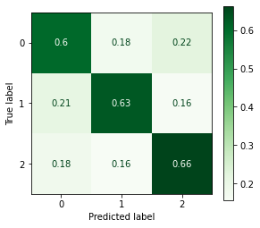
/opt/anaconda3/envs/learn-env-new/lib/python3.8/site-packages/sklearn/ensemble/_base.py:183: DeprecationWarning: `np.int` is a deprecated alias for the builtin `int`. To silence this warning, use `int` by itself. Doing this will not modify any behavior and is safe. When replacing `np.int`, you may wish to use e.g. `np.int64` or `np.int32` to specify the precision. If you wish to review your current use, check the release note link for additional information.
Deprecated in NumPy 1.20; for more details and guidance: https://numpy.org/devdocs/release/1.20.0-notes.html#deprecations
dtype=np.int)
Training Score = 1.00
/opt/anaconda3/envs/learn-env-new/lib/python3.8/site-packages/sklearn/ensemble/_base.py:183: DeprecationWarning: `np.int` is a deprecated alias for the builtin `int`. To silence this warning, use `int` by itself. Doing this will not modify any behavior and is safe. When replacing `np.int`, you may wish to use e.g. `np.int64` or `np.int32` to specify the precision. If you wish to review your current use, check the release note link for additional information.
Deprecated in NumPy 1.20; for more details and guidance: https://numpy.org/devdocs/release/1.20.0-notes.html#deprecations
dtype=np.int)
Test Score = 0.63
['./models/random_forest.joblib']
importantces = pd.Series(clf.feature_importances_,
index=text_pipe.named_steps['vectorizer'].get_feature_names())
importantces.sort_values().tail(25).plot(kind='barh')
/opt/anaconda3/envs/learn-env-new/lib/python3.8/site-packages/ipykernel/ipkernel.py:283: DeprecationWarning: `should_run_async` will not call `transform_cell` automatically in the future. Please pass the result to `transformed_cell` argument and any exception that happen during thetransform in `preprocessing_exc_tuple` in IPython 7.17 and above.
and should_run_async(code)
<AxesSubplot:>
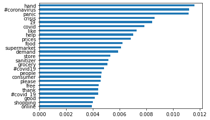
## Checking depths of rf trees
depths = [tree.get_depth() for tree in clf.estimators_]
sns.histplot(depths)
/opt/anaconda3/envs/learn-env-new/lib/python3.8/site-packages/ipykernel/ipkernel.py:283: DeprecationWarning: `should_run_async` will not call `transform_cell` automatically in the future. Please pass the result to `transformed_cell` argument and any exception that happen during thetransform in `preprocessing_exc_tuple` in IPython 7.17 and above.
and should_run_async(code)
<AxesSubplot:ylabel='Count'>
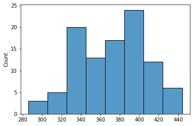
# ## rf gridsearch
# clf = RandomForestClassifier(class_weight='balanced')
# params = {'max_depth':[400,500,600]
# }
# gridsearch = GridSearchCV(clf,params,cv=3, scoring='recall_macro',verbose=True,
# n_jobs=-1)
# gridsearch.fit(X_train_vec,y_train)
# print(gridsearch.best_params_)
# evaluate_classification(gridsearch.best_estimator_, X_test_vec,y_test,X_train = X_train_vec,y_train=y_train)
# joblib.dump(gridsearch.best_estimator_,f"{save_path}gridsearch_random_forest.joblib",compress=3)
/opt/anaconda3/envs/learn-env-new/lib/python3.8/site-packages/ipykernel/ipkernel.py:283: DeprecationWarning: `should_run_async` will not call `transform_cell` automatically in the future. Please pass the result to `transformed_cell` argument and any exception that happen during thetransform in `preprocessing_exc_tuple` in IPython 7.17 and above.
and should_run_async(code)
# gridsearch.best_params_
/opt/anaconda3/envs/learn-env-new/lib/python3.8/site-packages/ipykernel/ipkernel.py:283: DeprecationWarning: `should_run_async` will not call `transform_cell` automatically in the future. Please pass the result to `transformed_cell` argument and any exception that happen during thetransform in `preprocessing_exc_tuple` in IPython 7.17 and above.
and should_run_async(code)
# pd.DataFrame(gridsearch.cv_results_).set_index('param_max_depth')['mean_test_score']
/opt/anaconda3/envs/learn-env-new/lib/python3.8/site-packages/ipykernel/ipkernel.py:283: DeprecationWarning: `should_run_async` will not call `transform_cell` automatically in the future. Please pass the result to `transformed_cell` argument and any exception that happen during thetransform in `preprocessing_exc_tuple` in IPython 7.17 and above.
and should_run_async(code)
Naive Bayes#
from sklearn.naive_bayes import MultinomialNB
/opt/anaconda3/envs/learn-env-new/lib/python3.8/site-packages/ipykernel/ipkernel.py:283: DeprecationWarning: `should_run_async` will not call `transform_cell` automatically in the future. Please pass the result to `transformed_cell` argument and any exception that happen during thetransform in `preprocessing_exc_tuple` in IPython 7.17 and above.
and should_run_async(code)
clf = MultinomialNB(fit_prior=False)#class_weight='balanced')
clf.fit(X_train_vec,y_train)
evaluate_classification(clf,X_test_vec,y_test,X_train = X_train_vec,y_train=y_train)
joblib.dump(clf,f"{save_path}naive_bayes.joblib")
/opt/anaconda3/envs/learn-env-new/lib/python3.8/site-packages/ipykernel/ipkernel.py:283: DeprecationWarning: `should_run_async` will not call `transform_cell` automatically in the future. Please pass the result to `transformed_cell` argument and any exception that happen during thetransform in `preprocessing_exc_tuple` in IPython 7.17 and above.
and should_run_async(code)
precision recall f1-score support
0 0.69 0.65 0.67 1564
1 0.81 0.06 0.12 737
2 0.59 0.86 0.70 1699
accuracy 0.63 4000
macro avg 0.70 0.53 0.50 4000
weighted avg 0.67 0.63 0.58 4000
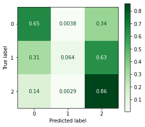
Training Score = 0.87
Test Score = 0.63
['./models/naive_bayes.joblib']
LinearSVC#
# raise Exception('Check SVC parms before running!')
/opt/anaconda3/envs/learn-env-new/lib/python3.8/site-packages/ipykernel/ipkernel.py:283: DeprecationWarning: `should_run_async` will not call `transform_cell` automatically in the future. Please pass the result to `transformed_cell` argument and any exception that happen during thetransform in `preprocessing_exc_tuple` in IPython 7.17 and above.
and should_run_async(code)
clf = SVC(kernel='linear',class_weight='balanced',verbose=2)
clf.fit(X_train_vec,y_train)
evaluate_classification(clf,X_test_vec,y_test,X_train = X_train_vec,y_train=y_train)
[LibSVM]
/opt/anaconda3/envs/learn-env-new/lib/python3.8/site-packages/ipykernel/ipkernel.py:283: DeprecationWarning: `should_run_async` will not call `transform_cell` automatically in the future. Please pass the result to `transformed_cell` argument and any exception that happen during thetransform in `preprocessing_exc_tuple` in IPython 7.17 and above.
and should_run_async(code)
precision recall f1-score support
0 0.69 0.69 0.69 1564
1 0.50 0.58 0.54 737
2 0.74 0.70 0.72 1699
accuracy 0.67 4000
macro avg 0.65 0.66 0.65 4000
weighted avg 0.68 0.67 0.68 4000
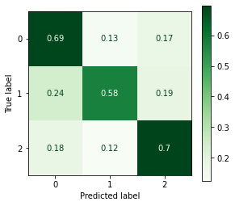
Training Score = 0.96
Test Score = 0.67
joblib.dump(clf,f"{save_path}svc_linear.joblib")
/opt/anaconda3/envs/learn-env-new/lib/python3.8/site-packages/ipykernel/ipkernel.py:283: DeprecationWarning: `should_run_async` will not call `transform_cell` automatically in the future. Please pass the result to `transformed_cell` argument and any exception that happen during thetransform in `preprocessing_exc_tuple` in IPython 7.17 and above.
and should_run_async(code)
['./models/svc_linear.joblib']
iNTERPRET#
Testing Loading Models#
import joblib
/opt/anaconda3/envs/learn-env-new/lib/python3.8/site-packages/ipykernel/ipkernel.py:283: DeprecationWarning: `should_run_async` will not call `transform_cell` automatically in the future. Please pass the result to `transformed_cell` argument and any exception that happen during thetransform in `preprocessing_exc_tuple` in IPython 7.17 and above.
and should_run_async(code)
model = joblib.load(f"{save_path}random_forest.joblib")
model
/opt/anaconda3/envs/learn-env-new/lib/python3.8/site-packages/ipykernel/ipkernel.py:283: DeprecationWarning: `should_run_async` will not call `transform_cell` automatically in the future. Please pass the result to `transformed_cell` argument and any exception that happen during thetransform in `preprocessing_exc_tuple` in IPython 7.17 and above.
and should_run_async(code)
RandomForestClassifier(class_weight='balanced')
text_pipe.named_steps['vectorizer'].get_feature_names()[:5]
/opt/anaconda3/envs/learn-env-new/lib/python3.8/site-packages/ipykernel/ipkernel.py:283: DeprecationWarning: `should_run_async` will not call `transform_cell` automatically in the future. Please pass the result to `transformed_cell` argument and any exception that happen during thetransform in `preprocessing_exc_tuple` in IPython 7.17 and above.
and should_run_async(code)
['!', '##cbd', '##coronavirus', '##departmentofhealth', '#13']
importances = pd.Series(model.feature_importances_,
index=text_pipe.named_steps['vectorizer'].get_feature_names())
importances.sort_values().tail(25).plot(kind='barh')
/opt/anaconda3/envs/learn-env-new/lib/python3.8/site-packages/ipykernel/ipkernel.py:283: DeprecationWarning: `should_run_async` will not call `transform_cell` automatically in the future. Please pass the result to `transformed_cell` argument and any exception that happen during thetransform in `preprocessing_exc_tuple` in IPython 7.17 and above.
and should_run_async(code)
<AxesSubplot:>
CONCLUSIONS & RECOMMENDATIONS#
Summarize your conclusions and bullet-point your list of recommendations, which are based on your modeling results.
Combining Spacy and Scattertext#
# # Visit https://spacy.io/usage for isntallation tool
# # !python -m spacy download en_core_web_sm
# import spacy
# nlp = spacy.load('en_core_web_sm')
/opt/anaconda3/envs/learn-env-new/lib/python3.8/site-packages/ipykernel/ipkernel.py:283: DeprecationWarning: `should_run_async` will not call `transform_cell` automatically in the future. Please pass the result to `transformed_cell` argument and any exception that happen during thetransform in `preprocessing_exc_tuple` in IPython 7.17 and above.
and should_run_async(code)
# nlp.pipeline
/opt/anaconda3/envs/learn-env-new/lib/python3.8/site-packages/ipykernel/ipkernel.py:283: DeprecationWarning: `should_run_async` will not call `transform_cell` automatically in the future. Please pass the result to `transformed_cell` argument and any exception that happen during thetransform in `preprocessing_exc_tuple` in IPython 7.17 and above.
and should_run_async(code)
# nlp.disable_pipes('tagger','ner')
/opt/anaconda3/envs/learn-env-new/lib/python3.8/site-packages/ipykernel/ipkernel.py:283: DeprecationWarning: `should_run_async` will not call `transform_cell` automatically in the future. Please pass the result to `transformed_cell` argument and any exception that happen during thetransform in `preprocessing_exc_tuple` in IPython 7.17 and above.
and should_run_async(code)
# nlp.pipeline
/opt/anaconda3/envs/learn-env-new/lib/python3.8/site-packages/ipykernel/ipkernel.py:283: DeprecationWarning: `should_run_async` will not call `transform_cell` automatically in the future. Please pass the result to `transformed_cell` argument and any exception that happen during thetransform in `preprocessing_exc_tuple` in IPython 7.17 and above.
and should_run_async(code)
#https://colab.research.google.com/github/DerwenAI/spaCy_tuTorial/blob/master/spaCy_tuTorial.ipynb#scrollTo=Bjz8pBV5D1r-
# !pip install scattertext
/opt/anaconda3/envs/learn-env-new/lib/python3.8/site-packages/ipykernel/ipkernel.py:283: DeprecationWarning: `should_run_async` will not call `transform_cell` automatically in the future. Please pass the result to `transformed_cell` argument and any exception that happen during thetransform in `preprocessing_exc_tuple` in IPython 7.17 and above.
and should_run_async(code)
# df
/opt/anaconda3/envs/learn-env-new/lib/python3.8/site-packages/ipykernel/ipkernel.py:283: DeprecationWarning: `should_run_async` will not call `transform_cell` automatically in the future. Please pass the result to `transformed_cell` argument and any exception that happen during thetransform in `preprocessing_exc_tuple` in IPython 7.17 and above.
and should_run_async(code)
# import scattertext as st
# st_corpus = st.CorpusFromPandas(df,
# category_col="SimpleSentiment",
# text_col="OriginalTweet",
# nlp=nlp).build()
/opt/anaconda3/envs/learn-env-new/lib/python3.8/site-packages/ipykernel/ipkernel.py:283: DeprecationWarning: `should_run_async` will not call `transform_cell` automatically in the future. Please pass the result to `transformed_cell` argument and any exception that happen during thetransform in `preprocessing_exc_tuple` in IPython 7.17 and above.
and should_run_async(code)
# df[]
/opt/anaconda3/envs/learn-env-new/lib/python3.8/site-packages/ipykernel/ipkernel.py:283: DeprecationWarning: `should_run_async` will not call `transform_cell` automatically in the future. Please pass the result to `transformed_cell` argument and any exception that happen during thetransform in `preprocessing_exc_tuple` in IPython 7.17 and above.
and should_run_async(code)
# st_html = st.produce_scattertext_explorer(
# st_corpus,
# category="Negative",
# category_name="Negative Tweets",
# not_category_name="Positive Tweets",
# width_in_pixels=1000,
# metadata=df[['Location','TweetAt']]#convention_df["speaker"]
# )
/opt/anaconda3/envs/learn-env-new/lib/python3.8/site-packages/ipykernel/ipkernel.py:283: DeprecationWarning: `should_run_async` will not call `transform_cell` automatically in the future. Please pass the result to `transformed_cell` argument and any exception that happen during thetransform in `preprocessing_exc_tuple` in IPython 7.17 and above.
and should_run_async(code)
# from IPython.display import IFrame
# file_name = "scattertext_negative.html"
# with open(file_name, "wb") as f:
# f.write(st_html.encode("utf-8"))
# # IFrame(src=file_name, width = 1200, height=700)
/opt/anaconda3/envs/learn-env-new/lib/python3.8/site-packages/ipykernel/ipkernel.py:283: DeprecationWarning: `should_run_async` will not call `transform_cell` automatically in the future. Please pass the result to `transformed_cell` argument and any exception that happen during thetransform in `preprocessing_exc_tuple` in IPython 7.17 and above.
and should_run_async(code)